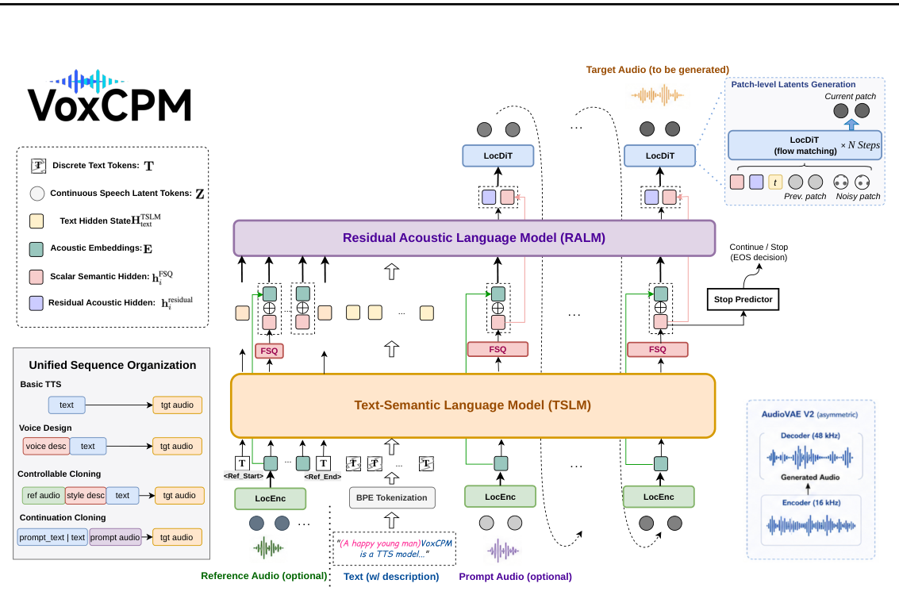

VoxCPM 团队VoxCPM Team
Project: https://github.com/OpenBMB/VoxCPM/ Model: https://huggingface.co/openbmb/VoxCPM2 Demo: https://huggingface.co/spaces/openbmb/VoxCPM-Demo Samples: https://openbmb.github.io/voxcpm2-demopage/
项目主页：https://github.com/OpenBMB/VoxCPM/ 模型：https://huggingface.co/openbmb/VoxCPM2 演示：https://huggingface.co/spaces/openbmb/VoxCPM-Demo 试听样例：https://openbmb.github.io/voxcpm2-demopage/
摘要Abstract
We present VoxCPM2, a fully open-source multilingual and controllable speech generation foundation model that extends the hierarchical diffusion-autoregressive modeling paradigm of VoxCPM. VoxCPM2 advances the framework in three key dimensions: (i) capability, by unifying 30 languages, 9 Chinese dialects, natural-language voice design, style-controllable voice cloning, and high-fidelity continuation cloning within a single backbone; (ii) quality, through an asymmetric AudioVAE that encodes at 16 kHz and reconstructs at 48 kHz, enabling implicit super-resolution with high encoding efficiency; and (iii) scale, by jointly scaling the model to 2B parameters and the training data to over 2 million hours of multilingual speech. To support these diverse capabilities within one model, we introduce a unified sequence organization that expresses all generation modes through different arrangements of the same input building blocks, allowing joint training under a single set of parameters and objective. VoxCPM2 achieves state-of-the-art or competitive performance on public zero-shot and instruction-following TTS benchmarks. On our internal 30- language evaluation set, it attains an average WER of 1.68%. These results demonstrate that hierarchical continuous-latent modeling, without relying on any external discrete speech tokenizer, offers a viable and powerful foundation for large-scale multilingual and controllable speech generation. The model weights, fine-tuning code, and inference tools are publicly released under the Apache 2.0 license to foster community research and development.
我们提出 VoxCPM2，这是一个完全开源的多语言、可控语音生成基础模型，它扩展了 VoxCPM 的分层扩散-自回归建模范式。VoxCPM2 在三个关键维度上推进了该框架：(i) 能力——在单一主干内统一了 30 种语言、9 种中文方言、自然语言声音设计、风格可控的声音克隆和高保真续写克隆；(ii) 质量——通过非对称 AudioVAE 以 16 kHz 编码、以 48 kHz 重建，在保持高编码效率的同时实现隐式超分；(iii) 规模——将模型扩展到 2B 参数，并把训练数据扩展到超过 200 万小时的多语言语音。为在单个模型内支撑这些多样的能力，我们引入了统一序列组织（unified sequence organization），把全部生成模式表达为同一组输入构件的不同排布，从而可以在单一参数集与单一目标下联合训练。VoxCPM2 在公开的零样本与指令跟随 TTS 基准上达到了最优或具有竞争力的性能。在我们内部的 30 语言评测集上，它的平均词错误率（WER）为 1.68%。这些结果表明：不依赖任何外部离散语音 tokenizer 的分层连续隐空间建模，能够为大规模多语言、可控语音生成提供一条可行且强大的基础路线。模型权重、微调代码与推理工具均以 Apache 2.0 许可证公开发布，以促进社区的研究与开发。
Background and VoxCPM Foundation . . . . . . . . . . . . . . . . . . . . . . . . . . . . .3 1.2 VoxCPM2: From Foundation to Full-Featured System . . . . . . . . . . . . . . . . . . . . .3 1.3 Paper Organization . . . . . . . . . . . . . . . . . . . . . . . . . . . . . . . . . . . . . . .42 2 相关工作Related Work
4 2.1 Large-Scale TTS Foundation Models . . . . . . . . . . . . . . . . . . . . . . . . . . . . . .4 2.2 Controllable and Expressive Speech Generation . . . . . . . . . . . . . . . . . . . . . . . .63 3 方法Methodology
6 3.1 Overview . . . . . . . . . . . . . . . . . . . . . . . . . . . . . . . . . . . . . . . . . . . .7 3.2 AudioVAE V2 . . . . . . . . . . . . . . . . . . . . . . . . . . . . . . . . . . . . . . . . . .8 3.3 Backbone Refinements and Scaling . . . . . . . . . . . . . . . . . . . . . . . . . . . . . . .8 3.3.1 Internal Architecture Refinements . . . . . . . . . . . . . . . . . . . . . . . . . . .8 3.3.2 Reference Audio Pathway . . . . . . . . . . . . . . . . . . . . . . . . . . . . . . .9 3.3.3Configuration Scaling. . . . . . . . . . . . . . . . . . . . . . . . . . . . . . . . .9 3.4 Unified Sequence Organization . . . . . . . . . . . . . . . . . . . . . . . . . . . . . . . . .9 3.5 Training Strategy . . . . . . . . . . . . . . . . . . . . . . . . . . . . . . . . . . . . . . . .10 3.6 Data Construction and Annotation for Controllability . . . . . . . . . . . . . . . . . . . . .11 3.7Inference. . . . . . . . . . . . . . . . . . . . . . . . . . . . . . . . . . . . . . . . . . . .124 4 实验与结果Experiments and Results
12 4.1 Experimental Setup . . . . . . . . . . . . . . . . . . . . . . . . . . . . . . . . . . . . . . .12 4.2 Zero-Shot Voice Cloning on Seed-TTS-Eval . . . . . . . . . . . . . . . . . . . . . . . . . .13 4.3 Multilingual Capability . . . . . . . . . . . . . . . . . . . . . . . . . . . . . . . . . . . . .14 4.4 Voice Design and Controllable Generation . . . . . . . . . . . . . . . . . . . . . . . . . . .16 4.5 AudioVAE V2 Reconstruction Quality . . . . . . . . . . . . . . . . . . . . . . . . . . . . .17 4.6Inference Efficiency and Deployment. . . . . . . . . . . . . . . . . . . . . . . . . . . . .18 4.7Subjective Listening Tests. . . . . . . . . . . . . . . . . . . . . . . . . . . . . . . . . . .185 5 结论与未来工作Conclusion and Future Work
196 6 贡献者Contributors
201 1 引言Introduction
1.1 1.1 背景与 VoxCPM 基础Background and VoxCPM Foundation
Text-to-speech (TTS) has evolved from producing intelligible speech toward generating natural, expressive, and controllable audio (Ping et al., 2018; Shen et al., 2018; Ren et al., 2020; Li et al., 2019). Modern applications—such as conversational agents, dubbing, accessibility tools, and interactive digital characters—require not only accurate pronunciation but also faithful reproduction of speaker identity, speaking style, and communicative intent. This raises the bar for acoustic fidelity, controllability, and multilingual coverage.
文本转语音（TTS）已经从「说得清」进化到「说得像」：要生成自然、富表现力、可控的音频（Ping et al., 2018; Shen et al., 2018; Ren et al., 2020; Li et al., 2019）。现代应用——如对话智能体、配音、无障碍工具和交互式数字角色——不仅要求发音准确，还要求忠实复现说话人身份、说话风格与交际意图。这抬高了声学保真度、可控性和多语言覆盖的门槛。
Driven by the success of large language models (LLMs), the dominant paradigm in contemporary TTS frames speech synthesis as sequence modeling over discrete tokens produced by neural audio codecs or tokenizers (Défossez et al., 2022; Kumar et al., 2023; Zhang et al., 2024). By discretizing speech, these systems inherit the scaling laws and in-context learning capabilities of LLMs (Borsos et al., 2023a; Kharitonov et al., 2023; Chen et al., 2025a). Recent advances have further extended this paradigm through improved tokenizer designs, fine-grained prosody and emotion control, and multilingual long-form generation (Peng et al., 2024; Wang et al., 2025c,d; Hu et al., 2026a; Gong et al., 2026; Liao et al., 2026).
受大语言模型（LLM）成功的驱动，当代 TTS 的主导范式把语音合成框定为对神经音频 codec 或 tokenizer 产出的离散 token 序列做序列建模（Défossez et al., 2022; Kumar et al., 2023; Zhang et al., 2024）。通过把语音离散化，这些系统继承了 LLM 的缩放定律与上下文学习能力（Borsos et al., 2023a; Kharitonov et al., 2023; Chen et al., 2025a）。近期进展进一步扩展了这一范式：改进的 tokenizer 设计、细粒度韵律与情感控制，以及多语言长音频生成（Peng et al., 2024; Wang et al., 2025c,d; Hu et al., 2026a; Gong et al., 2026; Liao et al., 2026）。
However, quantization inevitably discards fine-grained acoustic details. To mitigate this loss, most high-quality token-based systems adopt multi-stage pipelines, in which an autoregressive LLM predicts coarse or semantic tokens while a separate diffusion or flow-matching model restores local acoustic fidelity (Du et al., 2024a,b, 2025; Zhou et al., 2026a; Casanova et al., 2024; Guo et al., 2024; Xie et al., 2025a). Although effective in achieving strong perceptual quality, this decoupled design fragments high-level semantic planning from low-level acoustic rendering, preventing end-to-end joint optimization. Moreover, overall performance remains heavily dependent on the modeling capacity of the intermediate discrete speech tokenizer.
然而，量化（quantization）不可避免地丢弃了细粒度的声学细节。为缓解这一损失，多数高质量 token 路线系统采用多阶段流水线：自回归（autoregressive）LLM 预测粗粒度或语义 token，再由单独的扩散模型或流匹配（flow matching）模型恢复局部声学保真度（Du et al., 2024a,b, 2025; Zhou et al., 2026a; Casanova et al., 2024; Guo et al., 2024; Xie et al., 2025a）。这种解耦设计虽然能带来很强的感知质量，却割裂了高层语义规划与低层声学渲染，使端到端联合优化无从谈起。此外，整体性能仍然重度依赖中间那个离散语音 tokenizer 的建模容量。
An alternative research direction models continuous speech representations directly to preserve richer acoustic information. Building upon early autoregressive mel-spectrogram systems (Shen et al., 2018; Meng et al., 2025), recent methods employ denoising or flow-matching objectives over continuous acoustic latents. These approaches include both non-autoregressive diffusion models (Shen et al., 2023; Le et al., 2023; Chen et al., 2025b) and diffusion-autoregressive hybrids (Li et al., 2024; Jia et al., 2025; Peng et al., 2025; Wu et al., 2025; Turetzky et al., 2025). While effective at capturing fine acoustic details, they must jointly optimize semantic-prosodic structure and local acoustic texture within the same representation space and training objective, often leading to optimization challenges and error accumulation in long-form or highly expressive generation.
另一条研究路线直接对连续语音表征建模，以保留更丰富的声学信息。在早期的自回归 Mel 频谱图系统（Shen et al., 2018; Meng et al., 2025）基础上，近期方法在连续声学隐变量上采用去噪或流匹配目标。这些路线既包括非自回归（non-autoregressive）扩散模型（Shen et al., 2023; Le et al., 2023; Chen et al., 2025b），也包括扩散-自回归混合模型（Li et al., 2024; Jia et al., 2025; Peng et al., 2025; Wu et al., 2025; Turetzky et al., 2025）。它们虽然善于捕捉细粒度声学细节，但必须在同一表征空间、同一训练目标下同时优化语义-韵律结构和局部声学纹理，这往往带来优化困难，并在长音频或高表现力生成中出现误差累积。
VoxCPM (Zhou et al., 2025) was proposed to address this fundamental trade-off. It introduces a hierarchical backbone consisting of a Text-Semantic Language Model (TSLM), a differentiable semi-discrete bottleneck based on Finite Scalar Quantization (FSQ) (Mentzer et al., 2024), and a Residual Acoustic Language Model (RALM). The TSLM primarily captures high-level semantic and prosodic structures, the FSQ bottleneck compresses them into a stable skeleton, and the RALM recovers fine-grained acoustic details. These components jointly condition a Local Diffusion Transformer (LocDiT) to generate continuous latent patches. By leveraging this internal hierarchical design with a differentiable semi-discrete bottleneck, VoxCPM enables end-to-end training on continuous latents without any external discrete speech tokenizer. This structure facilitates joint optimization of semantic planning and acoustic rendering while mitigating the fragmentation typical of multi-stage pipelines.
VoxCPM（Zhou et al., 2025）正是为解决这一根本权衡而提出的。它引入了一个分层主干，由文本-语义语言模型（TSLM）、基于有限标量量化（FSQ）的可微分半离散瓶颈（Mentzer et al., 2024），以及残差声学语言模型（RALM）组成。TSLM 主要负责捕捉高层语义与韵律结构，FSQ 瓶颈把它们压缩成稳定的骨架，RALM 则恢复细粒度声学细节。这些组件共同作为条件，驱动一个局部扩散 Transformer（LocDiT）生成连续隐变量 patch。借助这种内部层级设计与可微分的半离散瓶颈，VoxCPM 无需任何外部离散语音 tokenizer，即可在连续隐变量上端到端训练。这一结构促进了语义规划与声学渲染的联合优化，同时缓解了多阶段流水线典型的割裂问题。
Overall, VoxCPM demonstrates that hierarchical continuous-latent modeling can achieve competitive performance without sacrificing acoustic richness or semantic intelligibility. Building on this foundation, VoxCPM2 evolves VoxCPM into a strong and practical TTS foundation model by significantly advancing capability, quality, and scale, while strictly preserving the hierarchical end-to-end continuous-latent design.
总的来看，VoxCPM 证明了分层连续隐空间建模可以在不牺牲声学丰富度或语义可懂度的前提下达到有竞争力的性能。在此基础之上，VoxCPM2 在严格保留分层端到端连续隐空间设计的同时，把能力、质量和规模大幅推进，使 VoxCPM 演变为一个强而实用的 TTS 基础模型。
1.2 1.2 VoxCPM2：从基础模型到全功能系统VoxCPM2: From Foundation to Full-Featured System
VoxCPM2 is the latest major release in the VoxCPM family—a 2B-parameter hierarchical diffusionautoregressive speech generation model built upon the MiniCPM-4 backbone (Team et al., 2025). It advances the original framework along three core dimensions: capability, quality, and scale, while preserving the hierarchical continuous-latent design.
VoxCPM2 是 VoxCPM 家族的最新主要版本——一个基于 MiniCPM-4 主干（Team et al., 2025）构建的 2B 参数分层扩散-自回归语音生成模型。它在能力、质量、规模三个核心维度上推进了原框架，同时保留了分层连续隐空间设计。
Capability. VoxCPM2 unifies four user-facing capabilities within a single backbone: (i) basic TTS supporting multilingual and cross-lingual synthesis, (ii) natural-language voice design that generates entirely new voices from free-form text descriptions without any reference audio, (iii) controllable cloning that clones a speaker from a short reference audio while following style instructions, and (iv) continuation-based cloning for high-fidelity audio continuation from a paired reference audio and its transcript. All modes share the same parameters, training objective, and inference pipeline, differing only in input sequence organization.
能力。VoxCPM2 在单一主干内统一了四种面向用户的能力：(i) 支持多语言与跨语言合成的基础 TTS；(ii) 自然语言声音设计——仅凭自由文本描述生成全新音色，无需任何参考音频；(iii) 可控克隆——从一段短参考音频克隆说话人，同时遵循风格指令；(iv) 续写式克隆——利用配对的参考音频及其转录文本做高保真音频续写。所有模式共享同一套参数、同一个训练目标和同一条推理流水线，区别只在输入序列的组织方式。
Quality. We introduce AudioVAE V2, an asymmetric latent codec that encodes at the sampling rate of 16 kHz and reconstructs at 48 kHz. This design maintains compact latent sequences for the VoxCPM2 backbone while enabling implicit super-resolution and high-quality output.
质量。我们引入 AudioVAE V2，一个以 16 kHz 采样率编码、以 48 kHz 重建的非对称隐空间 codec。这一设计在为 VoxCPM2 主干维持紧凑隐序列的同时，实现了隐式超分与高质量输出。
Scale. Recent work has formalized the Densing Law of LLMs (Xiao et al., 2025), which shows that the capacity density of LLMs (effective performance per parameter) grows exponentially, roughly doubling every three months. Guided by this principle, we jointly scale VoxCPM2 to 2B parameters and the training data to over 2 million hours of multilingual speech covering 30 languages and 9 Chinese dialects, while maintaining a compact 6.25 Hz token rate.
规模。近期工作形式化了 LLM 的密度定律（Densing Law）（Xiao et al., 2025），指出 LLM 的能力密度（单位参数的有效性能）呈指数增长，大约每三个月翻一番。在这一原则指导下，我们把 VoxCPM2 联合扩展到 2B 参数，训练数据扩展到超过 200 万小时、覆盖 30 种语言和 9 种中文方言的多语言语音，同时维持 6.25 Hz 的紧凑 token 率。
The main contributions of VoxCPM2 are as follows:
VoxCPM2 的主要贡献如下：
1. We extend the hierarchical continuous-latent framework into a unified 2B-parameter, 48 kHz, 30- language foundation model (plus 9 Chinese dialects), while preserving end-to-end training and a compact 6.25 Hz token rate without external discrete tokenizers.
1.我们把分层连续隐空间框架扩展为统一的 2B 参数、48 kHz、30 语言（另加 9 种中文方言）的基础模型，且保持端到端训练与 6.25 Hz 紧凑 token 率，全程不使用外部离散 tokenizer。
2. We integrate basic TTS, natural-language voice design, controllable cloning, and continuationbased cloning into a single backbone via a unified sequence organization, replacing per-task specialized models with one set of parameters and a unified inference path.
2.我们通过统一序列组织，把基础 TTS、自然语言声音设计、可控克隆与续写式克隆整合进单一主干，用一套参数和一条统一推理路径取代了逐任务定制的模型。
3. We introduce key architectural refinements—including improved semantic-acoustic fusion, multitoken LocDiT conditioning, and an isolated reference-audio pathway—to better support large-scale multilingual and controllable generation.
3.我们引入了若干关键架构改进——包括改进的语义-声学融合、多 token 的 LocDiT 条件注入，以及独立的参考音频通路——以更好地支撑大规模多语言与可控生成。
4. We demonstrate strong empirical performance and practical deployability through competitive or state-of-the-art results on multiple public benchmarks, an average WER of 1.68% on our internal 30-language test set, and efficient streaming inference.
4.我们以多个公开基准上有竞争力或最优的结果、内部 30 语言测试集上 1.68% 的平均 WER，以及高效的流式推理，证明了模型的强劲实证性能与实际可部署性。
1.3 1.3 论文结构Paper Organization
The remainder of this report is organized as follows. Section 2 reviews recent progress in large-scale TTS foundation models and controllable speech generation. Section 3 presents the VoxCPM2 system, including the overall architecture, AudioVAE V2, backbone refinements, unified sequence organization, and training strategy. Section 4 reports experimental results on zero-shot TTS, multilingual synthesis, controllable generation, reconstruction quality, and deployment efficiency. Section 5 discusses limitations, responsible-use considerations, and future directions.
本报告其余部分组织如下。第 2 节回顾大规模 TTS 基础模型与可控语音生成的近期进展。第 3 节介绍 VoxCPM2 系统，包括整体架构、AudioVAE V2、主干改进、统一序列组织与训练策略。第 4 节报告零样本 TTS、多语言合成、可控生成、重建质量与部署效率方面的实验结果。第 5 节讨论局限性、负责任使用方面的考量与未来的方向。
2 2 相关工作Related Work
We review prior work along two primary axes that frame our contributions: large-scale TTS foundation models and controllable/expressive speech generation.
我们沿两条主轴回顾已有工作，它们框定了本文的贡献：大规模 TTS 基础模型，以及可控/富有表现力的语音生成。
2.1 2.1 大规模 TTS 基础模型Large-Scale TTS Foundation Models
Building on early foundation models such as AudioLM (Borsos et al., 2023a), SPEAR-TTS (Kharitonov et al., 2023), VALL-E (Chen et al., 2025a), and Voicebox (Le et al., 2023), recent TTS research has expanded along several complementary directions. We organize the discussion around three paradigms most relevant to VoxCPM2: discrete-token language modeling, continuous-latent generation, and hierarchical semantic-acoustic decomposition.
在 AudioLM（Borsos et al., 2023a）、SPEAR-TTS（Kharitonov et al., 2023）、VALL-E（Chen et al., 2025a）、Voicebox（Le et al., 2023）等早期基础模型之上，近期 TTS 研究沿若干互补方向扩展。我们围绕与 VoxCPM2 最相关的三种范式组织讨论：离散 token 语言建模、连续隐空间生成，以及分层语义-声学分解。
神经 codec 上的离散 token 语言建模Discrete-token language modeling over neural codecs.
The dominant paradigm represents speech as sequences of discrete tokens produced by neural audio codecs or speech tokenizers (Défossez et al., 2022; Kumar et al., 2023; Xin et al., 2024; Zhang et al., 2024), inheriting LLM-style scaling and in-context learning capabilities. Three main sub-routes have emerged.
主导范式把语音表示为神经音频 codec 或语音 tokenizer 产出的离散 token 序列（Défossez et al., 2022; Kumar et al., 2023; Xin et al., 2024; Zhang et al., 2024），从而继承 LLM 式的缩放能力与上下文学习能力。其中已分化出三条主要子路线。
Single-backbone autoregressive systems predict codec tokens directly with a language model. The dominant tokenization is residual vector quantization (RVQ), where each frame is encoded into multiple stacked codebook indices. While RVQ provides a richer discrete representation, it complicates joint multi-token prediction per frame. Common strategies include coarse-to-fine prediction (Borsos et al., 2023a), parallel masked prediction (Borsos et al., 2023b), and delayed or interleaved token patterns (Copet et al., 2024). Early systems such as VoiceCraft (Peng et al., 2024) unifies zero-shot TTS and speech editing on top of EnCodec RVQ tokens. Subsequent works like Llasa (Ye et al., 2025b) explored LLM-style scaling over semantic-aware tokenizers (e.g., X-codec (Ye et al., 2025a)). Complementary efforts simplify the codec interface, such as Spark-TTS (Wang et al., 2025c) with single-stream decoupled tokens and SpeechTokenizer (Zhang et al., 2024), which aligns the first RVQ codebook with semantic content. At foundation scale, models such as Qwen3-TTS (Hu et al., 2026a), MOSS-TTS (Gong et al., 2026), Fish Audio S2 (Liao et al., 2026), and HiggsAudio v2 (Boson AI, 2025) have demonstrated strong scaling performance.
单主干自回归系统直接用语言模型预测 codec token。主流的 token 化方式是残差向量量化（RVQ）：每一帧被编码为多个堆叠的码本索引。RVQ 虽然提供了更丰富的离散表示，却使每帧的多 token 联合预测变得复杂。常见策略包括由粗到细的预测（Borsos et al., 2023a）、并行掩码预测（Borsos et al., 2023b），以及延迟或交错的 token 排布（Copet et al., 2024）。VoiceCraft（Peng et al., 2024）等早期系统在 EnCodec 的 RVQ token 之上统一了零样本 TTS 与语音编辑。随后的 Llasa（Ye et al., 2025b）等工作在语义感知 tokenizer（如 X-codec（Ye et al., 2025a））上探索了 LLM 式扩展。与之互补的工作则致力于简化 codec 接口，例如采用单流解耦 token 的 Spark-TTS（Wang et al., 2025c），以及把 RVQ 第一码本与语义内容对齐的 SpeechTokenizer（Zhang et al., 2024）。在基础模型规模上，Qwen3-TTS（Hu et al., 2026a）、MOSS-TTS（Gong et al., 2026）、Fish Audio S2（Liao et al., 2026）、HiggsAudio v2（Boson AI, 2025）等模型已展示了强劲的规模化性能。
Discrete non-autoregressive systems replace causal autoregression with masked or parallel prediction over discrete tokens. SoundStorm (Borsos et al., 2023b) pioneered this direction by adopting iterative masked prediction over RVQ tokens, achieving substantial speed-ups for high-fidelity audio generation while keeping a small number of refinement steps. MaskGCT (Wang et al., 2025d) extends the idea to zero-shot TTS via a two-stage masked generative codec transformer: a semantic-stage model first predicts speech-content tokens from text, and an acoustic-stage model then predicts residual acoustic tokens conditioned on the semantic tokens, both decoded in parallel by masked generation. More recently, OmniVoice (Zhu et al., 2026) scales discrete masked-prediction TTS to a single multilingual model covering over 600 languages, showing that the non-autoregressive route can support large-scale multilingual coverage.
离散非自回归系统用对离散 token 的掩码或并行预测取代因果自回归。SoundStorm（Borsos et al., 2023b）开创了这一方向：它在 RVQ token 上采用迭代式掩码预测，只需少量细化步数即可为高保真音频生成带来可观的加速。MaskGCT（Wang et al., 2025d）通过一个两阶段掩码生成 codec Transformer 把该思路扩展到零样本 TTS：语义阶段模型先从文本预测语音内容 token，声学阶段模型再以语义 token 为条件预测残差声学 token，两者都以掩码生成方式并行解码。更近的 OmniVoice（Zhu et al., 2026）把离散掩码预测 TTS 扩展到覆盖 600 多种语言的单一多语言模型，表明非自回归路线也能支撑大规模多语言覆盖。
Multi-stage hybrid systems pair an autoregressive LM for semantic or coarse-acoustic tokens with a separate diffusion or flow-matching decoder for waveform rendering. This design has become prevalent for high perceptual quality. Early systems such as XTTS (Casanova et al., 2024) use a token-prediction LM conditioned on a speaker embedding with a HiFi-GAN-style vocoder; the CosyVoice series (Du et al., 2024a,b, 2025) replaces the acoustic side with a flow-matching decoder conditioned on supervised semantic tokens; and the FireRedTTS series (Guo et al., 2024; Xie et al., 2025a) extends this two-stage layout toward industrial-scale long-form dialogue. Subsequent work refines the framework for more capability or better performance: IndexTTS2 (Zhou et al., 2026a) introduces explicit emotion and duration control, MiniMax-Speech (Zhang et al., 2025a) learns an intrinsic speaker encoder that extracts timbre features from a reference audio without requiring its transcription, and Voxtral TTS (Liu et al., 2026) explores a hybrid VQ–FSQ codec interface that combines discrete semantic indices with continuous-valued acoustic codes. The same LM-plus-flow-matching pipeline has also been adopted as the speech-generation component of broader audio foundation models, including GLM-4-Voice (Zeng et al., 2024), Step-Audio (Huang et al., 2025a) and Kimi-Audio (Kimi Team,
多阶段混合系统把负责语义或粗粒度声学 token 的自回归 LM，与负责波形渲染的独立扩散或流匹配解码器搭配使用。这种设计已成为追求高感知质量的主流做法。XTTS（Casanova et al., 2024）等早期系统用以说话人嵌入为条件的 token 预测 LM 加 HiFi-GAN 式声码器；CosyVoice 系列（Du et al., 2024a,b, 2025）把声学侧换成了以监督语义 token 为条件的流匹配解码器；FireRedTTS 系列（Guo et al., 2024; Xie et al., 2025a）则把这种两阶段布局推向工业级长对话场景。后续工作从能力或性能上继续完善这一框架：IndexTTS2（Zhou et al., 2026a）引入显式的情感与时长控制；MiniMax-Speech（Zhang et al., 2025a）学习了一个内禀说话人编码器，无需参考音频的转录即可提取音色特征；Voxtral TTS（Liu et al., 2026）探索了 VQ-FSQ 混合 codec 接口，把离散语义索引与连续值声学码结合起来。（目录残留页码 4。） 同样的 LM 加流匹配流水线也被更广泛音频基础模型采用为语音生成组件，包括 GLM-4-Voice (Zeng et al., 2024)、Step-Audio (Huang et al., 2025a) 和 Kimi-Audio (Kimi Team,
2025).连续隐空间与扩散-自回归生成Continuous-latent and diffusion-autoregressive generation.
A parallel line of research models continuous speech representations directly to preserve fine acoustic details lost during quantization. Building upon early autoregressive mel-spectrogram models (Shen et al., 2018; Meng et al., 2025), recent methods employ denoising or flow-matching objectives over continuous latents. Non-autoregressive models such as NaturalSpeech 2 (Shen et al., 2023) and Voicebox (Le et al., 2023) achieve high naturalness with competitive inference speed. MegaTTS 3 (Jiang et al., 2025) introduces sparse alignment to guide a latent diffusion transformer for improved handling of difficult sentences and accents. More end-to-end approaches include E2 TTS (Eskimez et al., 2024) and F5-TTS (Chen et al., 2025b), which remove explicit alignment and duration modules, as well as LongCat-AudioDiT (Meituan LongCat Team, 2026), which operates directly in waveform latent space using a Wav-VAE. Diffusion-autoregressive hybrids instead couple a language model for long-range planning with a local diffusion module for fine acoustic synthesis, which offers higher expressiveness and inherits several key modeling advantages from large language models. Notable examples include ARDiT (Li et al., 2024), which predicts continuous mel-spectrogram frames autoregressively using a decoder-only diffusion transformer, and DiTAR (Jia et al., 2025), which introduces a Local Diffusion Transformer (LocDiT) over patch-wise continuous latents conditioned on LM context—a foundational component reused in our work. A series of follow-up works further extend this design (An et al., 2026; Wang et al., 2025b; Turetzky et al., 2025; Wu et al., 2025; Peng et al., 2025).
与之并行的另一条路线直接对连续语音表征建模，以保留量化过程中丢失的细粒度声学细节。在早期自回归 Mel 频谱图模型（Shen et al., 2018; Meng et al., 2025）之上，近期方法在连续隐变量上采用去噪或流匹配目标。NaturalSpeech 2（Shen et al., 2023）、Voicebox（Le et al., 2023）等非自回归模型以有竞争力的推理速度实现了很高的自然度。MegaTTS 3（Jiang et al., 2025）引入稀疏对齐来引导隐空间扩散 Transformer，从而更好地处理难句与口音。更端到端的做法包括 E2 TTS（Eskimez et al., 2024）与 F5-TTS（Chen et al., 2025b），它们移除了显式对齐与时长模块；还有 LongCat-AudioDiT（Meituan LongCat Team, 2026），它借助 Wav-VAE 直接在波形隐空间中运作。扩散-自回归混合路线则把负责长程规划的语言模型与负责细粒度声学合成的局部扩散模块耦合起来，表现力更强，并继承了大语言模型的若干关键建模优势。代表性例子包括 ARDiT（Li et al., 2024）——用仅解码器的扩散 Transformer 自回归地预测连续 Mel 频谱帧；以及 DiTAR（Jia et al., 2025）——在以 LM 上下文为条件的逐 patch 连续隐变量上引入局部扩散 Transformer（LocDiT），这正是本文复用的基础组件。一系列后续工作进一步扩展了这一设计（An et al., 2026; Wang et al., 2025b; Turetzky et al., 2025; Wu et al., 2025; Peng et al., 2025）。
分层语义-声学分解Hierarchical semantic-acoustic decomposition.
Hierarchical decomposition appears across both discrete and continuous paradigms. The multi-stage hybrid systems implement it externally through separate semantic and acoustic stages, while other works embed hierarchy more explicitly inside the model. HierSpeech++ (Lee et al., 2025) bridges semantic and acoustic representations via hierarchical variational inference, HALL- E (Nishimura et al., 2025) stacks a hierarchical neural codec with a language model to support minute-long synthesis. and MARS6 (Baas et al., 2025) uses a hierarchical-token encoder–decoder transformer for compact and robust generation. Most of these approaches rely on discrete codecs or hierarchical token vocabularies between layers. VoxCPM (Zhou et al., 2025) takes a distinct route by realizing semantic-acoustic hierarchy inside a single continuous-latent backbone through a differentiable semi-discrete FSQ bottleneck. This enables fully end-to-end training without external discrete tokenizers. VoxCPM2 scales this hierarchical continuous-latent paradigm into a large multilingual and controllable foundation model.
分层分解同时出现在离散与连续两种范式中。多阶段混合系统通过分离的语义阶段与声学阶段在模型外部实现这种分解，而另一些工作则把层级结构更显式地嵌入模型内部。HierSpeech++（Lee et al., 2025）通过分层变分推断桥接语义与声学表征；HALL-E（Nishimura et al., 2025）把分层神经 codec 与语言模型堆叠起来以支持分钟级合成；MARS6（Baas et al., 2025）使用分层 token 的编码器-解码器 Transformer 实现紧凑而鲁棒的生成。这些方法大多在层与层之间依赖离散 codec 或分层 token 词表。VoxCPM（Zhou et al., 2025）走了一条不同的路：通过可微分的半离散 FSQ 瓶颈，在单一连续隐空间主干内部实现语义-声学层级。这使得全程无需外部离散 tokenizer 的端到端训练成为可能。VoxCPM2 把这一分层连续隐空间范式扩展成大规模的多语言、可控基础模型。
2.2 2.2 可控与富有表现力的语音生成Controllable and Expressive Speech Generation
As TTS has matured beyond intelligibility, controllability has become a central requirement—not only what is said, but who speaks and how (Xie et al., 2025b). Early controllable systems relied on categorical labels, global style tokens, or fixed attribute sets (Wang et al., 2018; Cai et al., 2021)which offered limited flexibility. This led to the emergence of natural-language control interfaces. PromptTTS (Guo et al., 2023) first conditions a TTS model on free-form style descriptions with BERT encoder, and PromptTTS 2 (Leng et al., 2024) adds variation modeling and an automatic description-generation pipeline. InstructTTS (Yang et al., 2024) models expressive TTS in a discrete latent space conditioned on style prompts. For more user-friendly, PromptStyle (Liu et al., 2023) performs description-guided cross-speaker style transfer. Complementary latent-diffusion approaches such as VoiceLDM (Lee et al., 2024) and AudioBox (Vyas et al., 2024) also investigate description-conditioned generation.
随着 TTS 越过「可懂」阶段走向成熟，可控性已成为核心需求——不仅是说什么，还包括谁在说、怎么说（Xie et al., 2025b）。早期的可控系统依赖类别标签、全局风格 token 或固定属性集合（Wang et al., 2018; Cai et al., 2021），灵活性有限。这催生了自然语言控制接口的出现。PromptTTS（Guo et al., 2023）首先用 BERT 编码器把 TTS 模型条件化在自由形式的风格描述上，PromptTTS 2（Leng et al., 2024）又加入变化建模与自动描述生成流水线。InstructTTS（Yang et al., 2024）在离散隐空间中以风格提示（prompt）为条件建模富有表现力的 TTS。为了更友好的使用体验，PromptStyle（Liu et al., 2023）实现了描述引导的跨说话人风格迁移。VoiceLDM（Lee et al., 2024）、AudioBox（Vyas et al., 2024）等互补的隐空间扩散方法也研究了以描述为条件的生成。
Recent advances have progressed along three main axes. On data construction, large-scale captioned corpora provide rich style descriptions: TextrolSpeech (Ji et al., 2024) couples speech with style-controlling captions, SpeechCraft (Jin et al., 2024) adds fine-grained expressive annotations, and CapSpeech (Wang et al., 2025a) aggregates multi-source captioned speech. On modeling techniques, Parler-TTS (Lyth & King, 2024) trains high-fidelity TTS conditioned on synthetic captions; VoxInstruct (Zhou et al., 2024) unifies content and style prompts into a single instruction; and follow-up systems extend the paradigm with open-ended instructions, attribute-level editing, or reference-free voice design (Yang et al., 2025; Ren et al., 2026; Hu et al., 2026b; Huang et al., 2026; Chen et al., 2026a). FlexiVoice (Chen et al., 2026a) and follow-ups further adopting DPO/GRPO-based post-training to better disentangle style, timbre, and content in cotrollable generation. Some TTS foundation systems like CosyVoice 3, Qwen3-TTS, MOSS-TTS, and Fish Audio S2 have integrated natural-language voice generation as a native capability, with commercial platforms like Gemini TTS and ElevenLabs demonstrating production-grade performance.
近期进展沿三条主线展开。在数据构建上，大规模带描述语料提供了丰富的风格描述：TextrolSpeech（Ji et al., 2024）把语音与风格控制描述配对；SpeechCraft（Jin et al., 2024）加入细粒度表现力标注；CapSpeech（Wang et al., 2025a）聚合了多来源的带描述语音。在建模技术上，Parler-TTS（Lyth & King, 2024）以合成描述为条件训练高保真 TTS；VoxInstruct（Zhou et al., 2024）把内容与风格提示统一为单条指令；后续系统又以开放式指令、属性级编辑或无参考声音设计扩展了这一范式（Yang et al., 2025; Ren et al., 2026; Hu et al., 2026b; Huang et al., 2026; Chen et al., 2026a）。FlexiVoice（Chen et al., 2026a）及其后续工作进一步采用基于 DPO/GRPO 的后训练，在可控生成中更好地解耦风格、音色与内容。CosyVoice 3、Qwen3-TTS、MOSS-TTS、Fish Audio S2 等 TTS 基础系统已把自然语言声音生成集成为原生能力，Gemini TTS、ElevenLabs 等商业平台则展示了生产级的性能。
Evaluation protocols have also matured in parallel. Benchmarks such as InstructTTSEval (Huang et al., 2025b) and MINT-Bench (Chen et al., 2026b) target fine-grained adherence to natural-language instructions. The Audio Turing Test, used for example in the Fish Audio S2 report (Liao et al., 2026), measures human-likeness via indistinguishability from real recordings. Besides, the Timing-control Benchmark (Mai et al., 2026) focuses on token-level duration and pause fidelity, EmergentTTS-Eval (Manku et al., 2026) probes stability under complex conditions, and TTSDS (Minixhofer et al., 2024) aggregates multiple acoustic and perceptual indicators into a score, jointly marking a shift toward multidimensional and reproducible evaluation.
评测协议也在同步成熟。InstructTTSEval（Huang et al., 2025b）、MINT-Bench（Chen et al., 2026b）等基准瞄准对自然语言指令的细粒度遵循。音频图灵测试（Audio Turing Test）——例如 Fish Audio S2 报告（Liao et al., 2026）所用的——通过与真实录音的不可区分度来衡量拟人程度。此外，时序控制基准（Timing-control Benchmark）（Mai et al., 2026）关注 token 级时长与停顿保真度；EmergentTTS-Eval（Manku et al., 2026）探测复杂条件下的稳定性；TTSDS（Minixhofer et al., 2024）把多个声学与感知指标聚合成一个分数——它们共同标志着评测正走向多维度与可复现。
A common limitation in existing controllable systems is architectural fragmentation, typically involving dedicated style encoders, adapters, or per-mode routing mechanisms. In contrast, VoxCPM2 treats naturallanguage voice and style descriptions as ordinary text prefixes to the same TSLM. Combined with a unified sequence organization, it supports voice design, reference-based cloning, controllable cloning, and continuation cloning within a single hierarchical continuous-latent backbone.
现有可控系统的一个共同短板是架构碎片化：往往需要专用的风格编码器、适配器，或按模式路由的机制。相比之下，VoxCPM2 把自然语言的音色与风格描述当作同一个 TSLM 的普通文本前缀来处理。结合统一序列组织，它在单一分层连续隐空间主干内支持声音设计、参考克隆、可控克隆与续写克隆。
3 Methodology T Discrete Text Tokens: Continuous Speech Latent Tokens: Text Hidden States: Target Audio (to be generated) Patch-level Latents GenerationMethodology T Discrete Text Tokens: Continuous Speech Latent Tokens: Text Hidden States: Target Audio (to be generated) Patch-level Latents Generation
Current patch
当前 patch……（图中文字残留，以下同）。
. . .LocDiT (flow matching) × N Steps LocDiT LocDiT t Prev. patch Noisy patch Residual Acoustic Language Model (RALM) Acoustic Embeddings:
LocDiT（流匹配）× N 步；LocDiT；LocDiT；t；前一 patch；含噪 patch；残差声学语言模型（RALM）；声学嵌入：（图中文字残留）。
Scalar Semantic Hidden:
（图内标签：Scalar Semantic Hidden（标量语义隐藏态）：）
Residual Acoustic Hidden:
（图内标签：Residual Acoustic Hidden（残差声学隐藏态）：）
......FSQ Unified Sequence Organization Basic TTS Continue / Stop (EOS decision) Stop Predictor
FSQ；统一序列组织；基础 TTS；继续/停止（EOS 判定）；停止预测器……（图中文字残留）。
. . .FSQ FSQ Text-Semantic Language Model (TSLM) text tgt audio Voice Design tgt audio voice desc text
FSQ；FSQ；文本-语义语言模型（TSLM）；text；tgt audio；声音设计（Voice Design）；tgt audio；voice desc；text……（图中文字残留）。
. . .T T T
……（图中省略号残留）。
...T T
……（图中省略号残留）。
...Controllable Cloning <Ref_Start> <Ref_End> LocEnc LocEnc LocEnc ref audio tgt audio style desc text BPE Tokenization Continuation Cloning
可控克隆（Controllable Cloning）；<Ref_Start>；<Ref_End>；LocEnc；LocEnc；LocEnc；ref audio；tgt audio；style desc；text；BPE 分词；续写克隆（Continuation Cloning）……prompt_text | text；tgt audio；prompt audio；"(A happy young man)VoxCPM is a TTS model..."（图中文字残留）。
. . .prompt_text | text tgt audio prompt audio "(A happy young man)VoxCPM is a TTS model..."
可控克隆（Controllable Cloning）；<Ref_Start>；<Ref_End>；LocEnc；LocEnc；LocEnc；ref audio；tgt audio；style desc；text；BPE 分词；续写克隆（Continuation Cloning）……prompt_text | text；tgt audio；prompt audio；"(A happy young man)VoxCPM is a TTS model..."（图中文字残留）。
Text (w/ description) Reference Audio (optional) Prompt Audio (optional)
文本（可选附描述）；参考音频（可选）；提示音频（可选）。

图Figure 1: Overall architecture of VoxCPM2.
图 1：VoxCPM2 的整体架构。
3.1 3.1 系统概览Overview
VoxCPM2 inherits the hierarchical diffusion-autoregressive formulation of VoxCPM (Zhou et al., 2025) and extends it into a multilingual and controllable foundation model. Speech is modeled entirely in the continuous latent space of AudioVAE V2: the encoder maps 16 kHz waveforms to 64-dimensional latent frames z at 25 Hz. The backbone then groups every P=4 frames into one patch, resulting in a 6.25 Hz autoregressive sequence where each step corresponds to 160 ms of audio.
VoxCPM2 继承了 VoxCPM（Zhou et al., 2025）的分层扩散-自回归形式化框架，并把它扩展成多语言、可控的基础模型。语音全程在 AudioVAE V2 的连续隐空间中建模：编码器把 16 kHz 波形映射为 25 Hz 的 64 维隐帧 z。主干随后把每 P=4 帧归为一个 patch，形成 6.25 Hz 的自回归序列，每一步对应 160 ms 的音频。
The autoregressive backbone consists of a Local Encoder (LocEnc), a Text-Semantic Language Model (TSLM), a Residual Acoustic Language Model (RALM), and a Local Diffusion Transformer (LocDiT), which together predict the next continuous latent patch step by step. Following the formulation in VoxCPM, the generation at the i-th patch is expressed as: zi ∼LocDiT hFSQ i , hresidual i , zi−1; t
自回归主干由局部编码器（LocEnc）、文本-语义语言模型（TSLM）、残差声学语言模型（RALM）和局部扩散 Transformer（LocDiT）组成，它们协同一步一步地预测下一个连续隐变量 patch。沿用 VoxCPM 的表述，第 i 个 patch 的生成为：z_i ~ LocDiT(h^FSQ_i, h^residual_i, z_{i−1}; t)，h^FSQ_i = FSQ(TSLM(T, E_{<i}))，h^residual_i = RALM(H^TSLM_text, H^FSQ_{≤i} ⊕ E_{<i})（式 1），其中 T 为输入文本 token，E_{<i} = LocEnc(z_{<i}) 为 Local Encoder 聚合的 patch 级声学历史，t 为扩散时间步。
,hFSQ i = FSQ TSLM(T, E<i),hresidual i = RALM HTSLM text , HFSQ ≤i ⊕E<i
沿用 VoxCPM 的表述，第 i 个 patch 的生成为：z_i ~ LocDiT(h^FSQ_i, h^residual_i, z_{i−1}; t)，h^FSQ_i = FSQ(TSLM(T, E_{<i}))，h^residual_i = RALM(H^TSLM_text, H^FSQ_{≤i} ⊕ E_{<i})（式 1），其中 T 为输入文本 token，E_{<i} = LocEnc(z_{<i}) 为 Local Encoder 聚合的 patch 级声学历史，t 为扩散时间步。
, (1)where T denotes the input text tokens, E<i = LocEnc(z<i) is the patch-level acoustic history aggregated by the Local Encoder, and t is the diffusion timestep. The FSQ layer applies per-dimension scalar quantization to the TSLM hidden states to produce the semi-discrete semantic skeleton hFSQ i . The RALM then recovers fine-grained acoustic details into hresidual i by conditioning on the TSLM text-side hidden states HTSLM text together with a fusion (⊕) of the FSQ-quantized audio-side history HFSQ ≤i and the Local Encoder embeddings E<i, granting causal access to the full sequence history. A stop predictor on top of the TSLM-FSQ hidden states determines generation termination, and the entire pipeline is trained end-to-end. We refer readers to the formal conference version of VoxCPM (Zhou et al., 2026b) for the full derivation.
沿用 VoxCPM 的表述，第 i 个 patch 的生成为：z_i ~ LocDiT(h^FSQ_i, h^residual_i, z_{i−1}; t)，h^FSQ_i = FSQ(TSLM(T, E_{<i}))，h^residual_i = RALM(H^TSLM_text, H^FSQ_{≤i} ⊕ E_{<i})（式 1），其中 T 为输入文本 token，E_{<i} = LocEnc(z_{<i}) 为 Local Encoder 聚合的 patch 级声学历史，t 为扩散时间步。FSQ 层对 TSLM 隐藏态做逐维标量量化，得到半离散的语义骨架 h^FSQ_i。随后 RALM 以 TSLM 文本侧隐藏态 H^TSLM_text 与 FSQ 量化的音频侧历史 H^FSQ_{≤i} 及 Local Encoder 嵌入 E_{<i} 的融合（⊕）为条件，把细粒度声学细节恢复为 h^residual_i，从而可以因果地访问完整序列历史。TSLM-FSQ 隐状态之上的一个停止预测器决定生成何时终止，整条流水线端到端训练。完整推导请读者参阅 VoxCPM 的正式会议版本（Zhou et al., 2026b）。
Eq. (1) already reflects two VoxCPM2-specific modifications relative to VoxCPM: (i) the LocDiT receives hFSQ i and hresidual i as separate conditioning tokens rather than a single summed vector hfinal i = hFSQ i + hresidual i
式 (1) 已体现 VoxCPM2 相对 VoxCPM 的两处修改：(i) LocDiT 以 h^FSQ_i 与 h^residual_i 作为两个独立条件 token，而非单个求和向量 h^final_i = h^FSQ_i + h^residual_i；(ii) RALM 前的融合算子 ⊕ 被替换为可学习的拼接-投影（详见 3.3.1 节）。
,and (ii) the fusion operator ⊕before the RALM is replaced by a learnable concatenation-projection (detailed in Section 3.3.1). Three additional groups of changes transform VoxCPM into a high-fidelity, multilingual, and controllable system:
3. 以及 (ii) RALM 之前的融合算子 ⊕ 被替换为可学习的拼接-投影（详见第 3.3.1 节）。另外三组改动把 VoxCPM 塑造成一个高保真、多语言、可控的系统：
• A redesigned latent codec, AudioVAE V2, that lifts the output sample rate to 48 kHz without lengthening the autoregressive sequence (Section 3.2).
• 重新设计的隐空间 codec——AudioVAE V2，在不拉长自回归序列的前提下把输出采样率提升到 48 kHz（第 3.2 节）。
• A refined backbone with wider information pathways, a new isolated reference-audio input, and substantially scaled capacity (Section 3.3). • A unified sequence organization that expresses basic TTS, voice design, reference cloning, controllable cloning, and continuation cloning as different input layouts over the same backbone (Section 3.4).
• 改进的主干：更宽的信息通路、新增的独立参考音频输入，以及大幅扩展的容量（第 3.3 节）。• 统一序列组织，把基础 TTS、声音设计、参考克隆、可控克隆与续写克隆表达为同一主干上的不同输入布局（第 3.4 节）。
The training strategy, data construction pipeline, and inference recipe are described in Sections 3.5–3.7.
训练策略、数据构建流水线与推理方案见第 3.5–3.7 节。
3.2 3.2 AudioVAE V2AudioVAE V2
The audio latent defines the representation on which the entire backbone operates. VoxCPM2 adopts AudioVAE V2, an asymmetric variational autoencoder whose encoder operates at 16 kHz and whose decoder reconstructs at 48 kHz. The asymmetric design serves two purposes simultaneously. On the decoder side, lifting the output rate to 48 kHz improves waveform fidelity to a high-quality regime without increasing the cost of the autoregressive generation loop. On the encoder side, restricting the input rate to 16 kHz (i) enables seamless reuse of the large-scale 16 kHz training corpus from the original VoxCPM, (ii) virtually eliminates latent mismatch across different source sample rates—thereby aligning the operational latent space of the backbone—and (iii) avoids the typical explosion in sequence length caused by a higher input rate.
音频隐变量定义了整个主干所操作的表征。VoxCPM2 采用 AudioVAE V2：一个非对称变分自编码器，编码器工作在 16 kHz，解码器以 48 kHz 重建。这一非对称设计同时服务于两个目的。在解码器一侧，把输出率提升到 48 kHz 可在不增加自回归生成循环开销的情况下，把波形保真度带入高质量区间。在编码器一侧，把输入率限制在 16 kHz 则有三重好处：(i) 可以无缝复用 VoxCPM 原有的大规模 16 kHz 训练语料；(ii) 几乎消除了不同来源采样率之间的隐空间失配，从而统一了主干的实际工作隐空间；(iii) 避免了更高输入率通常会带来的序列长度爆炸。
Architecturally, AudioVAE V2 follows the streaming-friendly causal-convolutional design of the original AudioVAE (Zhou et al., 2025) and modifies only the rate-related modules. The 16 kHz encoder uses a strided causal CNN stack with downsampling rates [2, 5, 8, 8], yielding a 640× temporal reduction and producing 64-dimensional latent frames at 25 Hz. The 48 kHz decoder mirrors this structure with a deeper causal CNN stack and wider internal channels to support higher reconstruction bandwidth, with upsampling rates [8, 6, 5, 2, 2, 2]. Combined with the backbone patch size P = 4, this yields a compact 6.25 Hz autoregressive sequence on the language-model side, sufficient for richer conditioning and longer contexts. The decoder additionally accepts an optional target-sample-rate condition, allowing the same latent to be rendered at multiple actual output rates for downstream deployment.
在架构上，AudioVAE V2 沿袭了原 AudioVAE（Zhou et al., 2025）对流式友好的因果卷积设计，只修改与采样率相关的模块。16 kHz 编码器使用步进式因果 CNN 堆叠，下采样率为 [2, 5, 8, 8]，带来 640× 的时间压缩，产出 25 Hz 的 64 维隐帧。48 kHz 解码器镜像这一结构，但采用更深的因果 CNN 堆叠与更宽的内部通道以支持更高的重建带宽，上采样率为 [8, 6, 5, 2, 2, 2]。再结合主干 patch 大小 P = 4，语言模型一侧得到紧凑的 6.25 Hz 自回归序列，足以支撑更丰富的条件信息与更长的上下文。解码器还接受一个可选的目标采样率条件，允许同一份隐变量在下游部署时按多种实际输出率渲染。
3.3 3.3 主干改进与规模化Backbone Refinements and Scaling
Extending VoxCPM into a multilingual and controllable foundation model imposes new requirements on the backbone, including higher conditioning bandwidth, support for arbitrary reference clips, and substantially increased capacity. We address these through three groups of changes: refining the internal architecture, adding an isolated reference-audio pathway, and scaling overall model capacity.
把 VoxCPM 扩展成多语言、可控的基础模型，对主干提出了新的要求：更高的条件信息带宽、对任意参考片段的支持，以及大幅提升的容量。我们通过三组改动来应对：改进内部架构、新增独立的参考音频通路，以及扩大整体模型容量。
3.3.1 3.3.1 内部架构改进（RALM 前的拼接-投影融合）Internal Architecture Refinements Concatenation-projection fusion before RALM.
In VoxCPM, the FSQ-quantized semantic state hFSQ i and the Local Encoder embedding Ei ∈E<i were merged by element-wise summation before entering the RALM. VoxCPM2 replaces this with a learnable concatenation-projection, hres_in i = Wfuse hFSQ i ∥Ei
在 VoxCPM 中，FSQ 量化的语义状态 h^FSQ_i 与 Local Encoder 嵌入 E_i ∈ E_{<i} 经逐元素求和合并后送入 RALM。VoxCPM2 将其替换为可学习的拼接-投影：h^res_in_i = W_fuse·[h^FSQ_i ∥ E_i]（式 2），其中 [·∥·] 表示通道维拼接。
, (2)where [ · ∥· ] denotes channel-wise concatenation. This preserves richer information from both streams and allows the model to learn optimal combination weights.
VoxCPM2 将其替换为可学习的拼接-投影：h^res_in_i = W_fuse·[h^FSQ_i ∥ E_i]（式 2），其中 [·∥·] 表示通道维拼接。这保留了两路信息流中更丰富的内容，也让模型能够学习到最优的组合权重。
LocDiT 中的多 token 条件前缀Multi-token conditioning prefix in LocDiT.
In VoxCPM, the semantic state, the residual state, and the timestep embedding were summed into a single conditioning token. VoxCPM2 instead projects the three signals separately and feeds them as distinct prefix tokens to the LocDiT. This avoids early information collapse and provides higher-bandwidth conditioning from the language model to the diffusion decoder. The process is: [ µsem, µres, µt, z(1)
在 VoxCPM 中，语义状态、残差状态与扩散步嵌入被求和为单个条件 token。VoxCPM2 则将三路信号分别投影，作为不同的前缀 token 送入 LocDiT。这避免了信息在进入扩散解码器之前过早坍缩，为从语言模型到扩散解码器提供了更高带宽的条件通道。具体序列为：[µsem, µres, µt, z(1)_i−1, …, z(P)_i−1, ẑ(1), …, ẑ(P)]，其中 µsem、µres、µt 分别是 hFSQ、hresidual 与扩散步 t 的投影，z(1...P) 表示一个 patch 内的 P 个隐帧（即前一干净 patch 与当前含噪 patch）。
i−1, . . . , z(P )i−1, ˜z(1) i, . . . , ˜z(P )i],where µsem, µres, µt are the projections of hFSQ i , hresidual i , and the diffusion timestep t, respectively, and z(1...P ) denotes the P latent frames inside one patch (the previous clean patch and the current noisy patch).
1.
The LocDiT attends over this sequence with full attention and predicts the velocity field at the noisy-patch positions.
LocDiT 以全注意力机制处理这一序列，并在含噪 patch 的位置上预测速度场（velocity field）。
更宽的 FSQ 瓶颈Wider FSQ bottleneck.
We increase the FSQ bottleneck dimensionality from 256 to 512 to accommodate the larger model and broader linguistic coverage, while retaining the quantization granularity of 9 levels per dimension.
我们把 FSQ 瓶颈的维度从 256 提升到 512，以适配更大的模型与更广的语言覆盖，同时保持每维 9 级的量化粒度不变。
移除 RALM 中的位置编码Removing positional encoding from RALM.
We retain Rotary Position Embeddings (RoPE) (Su et al., 2024) in the TSLM but remove them from the RALM following the NoPE design (Kazemnejad et al., 2023). Since the RALM’s role is primarily local acoustic refinement conditioned on the semantic skeleton, removing positional encodings reduces overfitting to training lengths and improves long-utterance stability.
我们在 TSLM 中保留旋转位置编码（RoPE）（Su et al., 2024），但按照 NoPE 设计（Kazemnejad et al., 2023）将其从 RALM 中移除。由于 RALM 的职责主要是在语义骨架条件下做局部声学细化，移除位置编码可减少对训练长度的过拟合，并提升长句生成的稳定性。
3.3.2 3.3.2 参考音频通路Reference Audio Pathway
Beyond the continuation-style prompt inherited from VoxCPM, VoxCPM2 introduces an explicit referenceaudio pathway. This pathway allows the insertion of a single reference audio clip from the target speaker as a voice-identity prefix, even without its transcript. The reference clip is encoded by AudioVAE V2 into latent patches and inserted as a delimited segment (REF_START, REF_END) at the beginning of the input sequence. Thanks to the causal nature of the TSLM and RALM, all subsequent positions can attend to this segment, providing robust speaker-identity information without requiring the reference to act as a temporal prefix of the target audio or to have an aligned transcript—in contrast to continuation-based cloning. This decoupled design enables an optional voice cloning manner during inference without needing aligned text for the reference clip. It also lays the foundation for controllable cloning by effectively separating speaker identity from style control instructions. The reference segment is excluded from the training loss and serves purely as conditioning context. Its integration with other input building blocks is detailed in Section 3.4.
除了从 VoxCPM 继承的续写式提示（prompt），VoxCPM2 还引入了一条显式的参考音频通路。这条通路允许把目标说话人的一段参考音频作为声音身份前缀插入序列，即使没有该音频的转录文本也可以。参考片段由 AudioVAE V2 编码为隐变量 patch，并以带定界符的片段（REF_START、REF_END）插入到输入序列的开头。得益于 TSLM 与 RALM 的因果特性，后续所有位置都能注意（attend）到这一片段，从而获得稳健的说话人身份信息——这与续写式克隆不同：它不要求参考音频充当目标音频的时间前缀，也不要求对齐的转录文本。这种解耦设计使推理时的声音克隆成为一种可选能力，无需参考片段的对齐文本。它通过把说话人身份与风格控制指令有效分离，也为可控克隆奠定了基础。参考片段不计入训练损失，仅作为条件上下文使用。它与其他输入构件的组合方式详见第 3.4 节。
3.3.3 3.3.3 配置规模化Configuration Scaling
Together with the above refinements, VoxCPM2 scales the backbone along depth, width, and context length. Table 1 summarizes the configuration relative to previous VoxCPM releases. A practically important update, first introduced in VoxCPM1.5 and retained here, is increasing the patch size from P = 2 to P = 4. This adjustment lowers the language-model-side token rate from 12.5 Hz to 6.25 Hz, reducing inference cost while improving long-form stability, consistent with recent trends in long-context speech modeling (Peng et al., 2025). Collectively, these changes enable the same hierarchical continuous-latent framework to scale from a bilingual zero-shot prototype to a large-scale multilingual and controllable foundation model, while preserving the compact token rate and streaming-friendly causal structure.
在上述改进之外，VoxCPM2 还沿深度、宽度与上下文长度三个方向扩展了主干。Table 1 汇总了与历代 VoxCPM 版本的配置对比。一项在工程上很重要的更新——首次在 VoxCPM1.5 中引入并在此保留——是把 patch 大小从 P = 2 提高到 P = 4。这一调整把语言模型一侧的 token 率从 12.5 Hz 降到 6.25 Hz，在降低推理开销的同时提升了长音频稳定性，与近期长上下文语音建模的趋势一致（Peng et al., 2025）。这些改动合起来，使同一套分层连续隐空间框架得以从双语零样本原型扩展成大规模多语言、可控的基础模型，同时保持紧凑的 token 率与流式友好的因果结构。
Table 1: Configuration comparison across the VoxCPM family.
表 1：VoxCPM 家族各版本的配置对比。
Component VoxCPM VoxCPM1.5 VoxCPM2 Backbone parameters ∼0.6B ∼0.8B ∼2B LocEnc 4L, H=1024 8L, H=1024 12L, H=1024 TSLM MiniCPM-4-0.5B (24L, H=1024) MiniCPM-4-0.5B (24L, H=1024) MiniCPM-4-1B (28L, H=2048) FSQ latent dim
（目录残留页码 4。） 组件 VoxCPM VoxCPM1.5 VoxCPM2 骨干参数量 ∼0.6B ∼0.8B ∼2B LocEnc 4L, H=1024 8L, H=1024 12L, H=1024 TSLM MiniCPM-4-0.5B (24L, H=1024) MiniCPM-4-0.5B (24L, H=1024) MiniCPM-4-1B (28L, H=2048) FSQ 潜在维度
256 256 512RALM 6L, H=1024 8L, H=1024 8L, H=2048 LocDiT 4L, H=1024 8L, H=1024 12L, H=1024 Patch size P
（目录残留页码 4。） RALM 6L, H=1024 8L, H=1024 8L, H=2048 LocDiT 4L, H=1024 8L, H=1024 12L, H=1024 Patch 大小 P
2 4 4LM-side token rate 12.5 Hz 6.25 Hz 6.25 Hz Max sequence length
（目录残留页码 6。） LM 侧 token 速率 12.5 Hz 6.25 Hz 6.25 Hz 最大序列长度
4096 4096 8192（目录残留页码 4。）
原始表格文本（18 个单元格，PDF 抽取顺序，数字与原文一致；精确排版见原文 PDF）
Input sample rate 16 kHz 44.1 kHz 16 kHz Output sample rate 16 kHz 44.1 kHz 48 kHz
3.4 3.4 统一序列组织Unified Sequence Organization
VoxCPM2 supports five generation configurations through a single unified sequence organization rather than mode-specific modules. These configurations are built upon the same set of input building blocks, allowing the model to infer the intended behavior directly from the input layout. Although we refer to five configurations for completeness, they can be grouped into four primary capabilities: basic TTS, voice design, reference-based cloning (with or without additional style control), and continuation cloning.
VoxCPM2 通过单一统一序列组织支持五种生成配置，而不是为每种模式配备专用模块。这些配置由同一组输入构件搭建，模型可以直接从输入布局推断出预期的行为。尽管为完整起见我们称之为五种配置，但它们可以归并为四项主要能力：基础 TTS、声音设计、参考克隆（可附加风格控制，也可不加），以及续写克隆。
The backbone processes two parallel tracks at each position—a text token and an audio latent—with a binary modality indicator determining the input embedding. An input sequence is assembled from three types of building blocks:
主干在每个位置处理两条平行轨道——一个文本 token 和一个音频隐变量——并由一个二值模态指示符决定该位置的输入嵌入方式。一条输入序列由三类构件拼装而成：
• text: the synthesis transcription, optionally preceded by a natural-language description of the desired voice and/or style; • reference audio: a delimited segment bracketed by REF_START/REF_END that supplies isolated voiceidentity evidence; • target audio: the segment the model is required to generate.
• text：合成文本，其前可选地拼上描述目标音色和/或风格的自然语言；• reference audio：由 REF_START/REF_END 包裹的定界片段，提供独立的声音身份证据；• target audio：要求模型生成的片段。
During training, only the target-audio segment contributes to the loss; preceding tokens serve as conditioning context. At inference, users may additionally supply a prompt audio together with its transcript as observed context. This prompt is structurally treated as the initial prefix of the target audio segment used during training, from which the model continues autoregressively. The five configurations differ only in how these building blocks are arranged, as summarized in Table 2.
训练时只有 target audio 片段计入损失；其前的 token 只作为条件上下文。推理时，用户还可额外提供一段提示音频及其转录，作为已观测的上下文。该提示在结构上被视为训练时 target audio 片段的起始前缀，模型从它之后继续自回归生成。五种配置的区别仅在于这些构件的排布方式，汇总见 Table 2。
Table 2: Sequence layouts of the five generation configurations. “→” separates the conditioning context from the target segment to be generated, and “|” separates building blocks within the conditioning context.
表 2：五种生成配置的序列布局。「→」分隔条件上下文与待生成的目标片段，「|」分隔条件上下文内部的构件。
模式（五种配置的序列布局）Mode
Sequence layout Basic TTS ⟨text⟩→⟨target audio⟩ Voice design ⟨(voice description) text⟩→⟨target audio⟩ Reference cloning ⟨reference audio⟩| ⟨text⟩→⟨target audio⟩ Controllable cloning ⟨reference audio⟩| ⟨(style description) text⟩→⟨target audio⟩ Continuation cloning ⟨prompt text + target text⟩| ⟨prompt audio⟩→⟨target audio⟩ Two aspects of this design are particularly noteworthy. First, for voice design and controllable cloning, the natural-language description is simply concatenated with the synthesis text, allowing the same TSLM to handle both semantic content and control instructions without additional modules. Second, continuation cloning benefits from a paired transcript for higher fidelity. At inference time, this layout can also be combined with an isolated reference segment to provide both temporal alignment and explicit speaker-identity evidence, yielding the “Reference + Continuation” recipe evaluated in Section 4.2.
（Table 2 内容残留）序列布局：基础 TTS：⟨text⟩→⟨target audio⟩；声音设计：⟨(voice description) text⟩→⟨target audio⟩；参考克隆：⟨reference audio⟩|⟨text⟩→⟨target audio⟩；可控克隆：⟨reference audio⟩|⟨(style description) text⟩→⟨target audio⟩；续写克隆：⟨prompt text + target text⟩|⟨prompt audio⟩→⟨target audio⟩。这一设计有两点尤其值得注意。第一，对声音设计与可控克隆而言，自然语言描述只是简单地与合成文本拼接，让同一个 TSLM 同时处理语义内容与控制指令，无需任何附加模块。第二，续写克隆因配有成对的转录文本而能获得更高的保真度。推理时，这种布局还可以与独立的参考片段组合，同时提供时间对齐与显式的说话人身份证据，即第 4.2 节评测的「Reference + Continuation」方案。
3.5 3.5 训练策略（训练目标）Training Strategy Training objective.
We retain the two-term objective of VoxCPM: a patch-level conditional flow-matching loss on the target latent patches, and a binary stop-prediction loss on the TSLM-FSQ hidden states. Both losses are masked to the target-audio segment only. To enable classifier-free guidance at inference (Section 3.7), we randomly drop the LM-side conditioning of the LocDiT with probability 10% during training. The optimizer is AdamW with cosine learning-rate decay and linear warmup.
我们沿用 VoxCPM 的两项式目标：对目标隐变量 patch 的 patch 级条件流匹配损失，以及作用在 TSLM-FSQ 隐状态上的二值停止预测损失。两项损失都只在 target audio 片段上计算并施加掩码。为在推理时启用无分类器引导（classifier-free guidance，见第 3.7 节），我们在训练中以 10% 的概率随机丢弃 LocDiT 的 LM 侧条件。优化器采用 AdamW，配余弦学习率衰减与线性预热。
三阶段渐进式课程Three-stage progressive curriculum.
To prevent destabilizing the base synthesis quality when incorporating all target capabilities simultaneously, we adopt a three-stage progressive curriculum. The loss formulation remains fixed across all stages, while we vary only the data composition, mixing ratio, and context length:
为避免在同时纳入全部目标能力时破坏基础合成质量，我们采用了三阶段渐进式课程。各阶段的损失形式保持不变，只改变数据构成、混合比例与上下文长度：
1. Multilingual TTS pretraining. The backbone is trained on large-scale multilingual <transcription, audio> pairs for basic TTS and continuation cloning. Audio segments are limited to 60 s and the maximum LM sequence length is set to 4096 to ensure stable and fast optimization. This stage establishes solid pronunciation and prosody across all 30 target languages. 2. Joint TTS and controllable TTS pretraining. Building upon stage 1, we retain a large proportion of plain TTS data to preserve base synthesis quality, while gradually introducing controllable data at an increasing ratio. This includes (i) speech annotated with natural-language voice and style descriptions to supervise voice design, and (ii) <reference audio, transcription, target audio> triplets to train both reference-based and controllable cloning. We extend the maximum sequence length
1.多语言 TTS 预训练。主干在大规模多语言 ⟨transcription, audio⟩ 对上训练基础 TTS 与续写克隆。音频片段限制在 60 s 以内，LM 最大序列长度设为 4096，以保证优化稳定且高效。这一阶段在全部 30 种目标语言上建立可靠的发音与韵律基础。2.TTS 与可控 TTS 联合预训练。在第 1 阶段的基础上，我们保留较大比例的普通 TTS 数据以守住基础合成质量，同时按逐渐提高的比例引入可控数据。这包括：(i) 带自然语言音色与风格描述标注的语音，用于监督声音设计；(ii) ⟨reference audio, transcription, target audio⟩ 三元组，用于训练参考克隆与可控克隆。我们把最大序列长度扩展到 8192，音频时长放宽到最长 3 分钟。
to 8192 and audio duration to up to 3 minutes. Stages 1 and 2 together account for the majority oftraining compute. 3. High-quality annealing SFT. The final stage uses a curated high-quality subset with more expressive speech and precisely annotated controllable data. Controllable samples occupy a significantly larger proportion than in Stage 2, including a higher ratio of reference-audio-based controllable cloning examples. We maintain the 8192-token context, utilize diverse samples ranging from 2 sec to 5 min, adopt a balanced language-level sampling ratio, and apply learning-rate annealing to further refine performance.
3.高质量退火 SFT（监督微调）。最后阶段使用精选的高质量子集，其中包含更具表现力的语音与精确标注的可控数据。可控样本的占比显著高于第 2 阶段，其中基于参考音频的可控克隆样本比例也更高。我们保持 8192 token 的上下文，使用时长从 2 秒到 5 分钟的多样样本，采用各语言均衡的采样比例，并施加学习率退火以进一步打磨性能。
3.6 3.6 面向可控性的数据构建与标注Data Construction and Annotation for Controllability
The total training corpus comprises over 2 million hours of multilingual speech, with Chinese and English forming the majority. The remaining 28 languages range from roughly 1 K to 50 K hours each, depending on data availability and annotation quality. The base TTS data follows a standard preparation pipeline: source separation, voice activity detection, ASR-based transcript alignment, and quality filtering.
总训练语料包含超过 2 百万小时的多语言语音，其中以中文和英文为主。其余 28 种语言各自的规模大致在 1 K 到 50 K 小时之间，取决于数据可得性与标注质量。基础 TTS 数据遵循标准准备流水线：音源分离、语音活动检测、基于 ASR 的转录对齐与质量过滤。
For controllable generation, we combine tens of thousands of hours of open-source expressive speech with several thousand hours of internally curated and annotated data. The open-source portion provides broad coverage of emotions, speaking styles, and speakers, while the internal portion emphasizes higher annotation precision and richer natural-language descriptions. The remainder of this section details how the internal subset is constructed and annotated.
面向可控生成，我们将数万小时的开源表现力语音与数千小时内部精选标注数据相结合。开源部分提供对情感、说话风格与说话人的广泛覆盖，内部部分则强调更高的标注精度与更丰富的自然语言描述。本节的其余部分将详细介绍内部子集的构建与标注方式。
筛选值得标注的表现力音频Selecting expressive audio worth annotating.
Public controllable corpora often contain acoustically flat utterances, capping the upper bound of controllability. To avoid this, we first collect speech across diverse expressive scenarios, and then pre-screen large unlabeled corpora using lightweight emotion classifiers, retaining only sufficiently expressive samples for annotation.
公开的可控语料常包含声学上平淡的语句，限制了可控性的上限。为避免这一点，我们先在多样的表现力场景中收集语音，再用轻量级情感分类器对大规模无标注语料进行预筛，只保留表现力足够强的样本进入标注环节。
多维度自然语言标注Multi-dimensional natural-language annotation.
We annotate selected expressive utterances along two axes that mirror the target capabilities: voice design attributes (e.g., age, gender, accent, vocal texture, scenario) and style control attributes (e.g., emotion, speaking rate, pitch, energy, emphasis). Annotations are generated using general-purpose audio understanding models (e.g., Step-Audio R1 (Tian et al., 2025) and Gemini 2.5 Pro) which produce free-form natural-language descriptions at varying granularities, and verified with some dedicated expert classifiers in terms of gender, age and emotion. The resulting descriptions are used directly as text prefixes, requiring no additional embedding modules.
我们沿两条与目标能力对应的轴线标注选出的表现力语句：声音设计属性（如年龄、性别、口音、嗓音质感、场景）与风格控制属性（如情感、语速、音高、能量、重音）。标注由通用音频理解模型（如 Step-Audio R1（Tian et al., 2025）与 Gemini 2.5 Pro）生成，产出不同粒度的自由形式自然语言描述，并由若干专用专家分类器在性别、年龄与情感维度上进行核验。所得描述直接作为文本前缀使用，无需任何额外的嵌入模块。
为克隆挖掘同说话人参考片段Mining same-speaker references for cloning.
Reference-based cloning requires a reference clip that shares the speaker with the target utterance. We harvest reference clips from the same recording session by computing speaker-embedding cosine similarity and retaining clips with a similarity score above 0.7. We additionally exclude clips that directly precede the target utterance. This ensures they do not directly precede the target utterance. Note that even with this threshold, the selected reference clips may still differ in fine acoustic details from the target, so reference-based cloning naturally achieves lower similarity than continuation-based cloning. This pool supports both reference cloning and controllable cloning.
基于参考音频的克隆要求参考片段与目标语句来自同一说话人。我们从同一录音会话中采掘参考片段：计算说话人嵌入余弦相似度，保留相似度高于 0.7 的片段。我们还额外排除紧邻目标语句之前的片段。这确保参考片段不会直接位于目标语句之前。需要注意的是，即使有这一阈值，所选参考片段在细粒度声学细节上仍可能与目标不同，因此基于参考的克隆天然比基于续写的克隆取得更低的相似度。该片段池同时支撑参考克隆与可控克隆。
通过克隆合成解耦风格与内容Decoupling style from content via cloned synthesis.
A common challenge with naturally annotated expressive speech is the strong correlation between prosodic style and textual content (e.g., cheerful styles often co-occur with positive sentences). Training directly on such data risks the model recovering style from the text rather than from the control prompt, thereby weakening controllability. To address this, we use the model itself to generate content-decoupled examples: starting from an annotated utterance, we clone its voice and style onto a semantically unrelated transcript, while preserving the original natural-language description as the control prompt. The resulting <description, another text, audio> pairs, whose content no longer leaks style cues, are mixed back into training. This procedure also helps extend controllable training to long-tail languages with limited native expressive data. To minimize potential artifacts from self-synthesized speech, we inject this data primarily in stage 2 and restrict the stage 3 annealing mixture to natively recorded high-quality speech.
自然标注的表现力语音有一个常见难题：韵律风格与文本内容之间存在强相关（例如欢快的风格常与正面句子共现）。直接在这种数据上训练，模型有可能从文本而非控制提示中恢复风格，从而削弱可控性。为解决这一问题，我们使用模型自身生成内容解耦的样本：从一条带标注的语句出发，把它的音色与风格克隆到一段语义无关的转录文本上，同时保留原始自然语言描述作为控制提示。得到的 ⟨description, another text, audio⟩ 三元组中，内容不再泄漏风格线索，再被混回训练。这一流程也有助于把可控训练扩展到缺乏原生表现力数据的长尾语言。为尽量减少自合成语音可能带来的伪影，我们主要在第 2 阶段注入这类数据，并将第 3 阶段的退火混合限制为原生录制的高质量语音。
3.7 3.7 推理Inference
At inference time, VoxCPM2 generates speech autoregressively, one latent patch at a time. We adopt three techniques to balance speed and quality.
推理时，VoxCPM2 以每次一个隐变量 patch 的方式自回归地生成语音。我们采用三项技术来平衡速度与质量。
无分类器引导（CFG）Classifier-free guidance (CFG).
The LM-side conditioning to the LocDiT is randomly dropped during training, enabling both conditional and unconditional predictions. At each denoising step, we evaluate the LocDiT twice and linearly combine the velocity fields as ˆv = vuncond + α (vcond −vuncond), where α = 2.0 by default. We find α ∈[1.5, 3.0] to be a practical range.
训练时随机丢弃 LocDiT 的 LM 侧条件，使模型同时具备条件预测与无条件预测能力。在每个去噪步上，我们对 LocDiT 求值两次，并按 v̂ = vuncond + α (vcond − vuncond) 线性组合两个速度场，默认取 α = 2.0。我们发现 α ∈ [1.5, 3.0] 是一个实用区间。
摇摆采样（sway sampling）与 CFG-Zero*Sway sampling and CFG-Zero*.
We apply sway sampling (Chen et al., 2025b) to allocate more solver steps to high-noise regimes and CFG-Zero* (Fan et al., 2025) to reduce early-step artifacts. Both techniques are enabled by default and introduce no additional learnable parameters.
我们应用摇摆采样（Chen et al., 2025b）将更多求解步分配到高噪声区间，并应用 CFG-Zero*（Fan et al., 2025）减少初始步的伪影。两项技术默认启用，且不引入任何额外的可学习参数。
流式合成Streaming.
The causal structure of the TSLM and RALM, combined with the patch-local design of LocEnc and LocDiT (each operating over a single patch with full intra-patch attention), enables efficient patch/chunkbased streaming. Each generated latent patch is immediately decoded by a stateful AudioVAE V2 decoder. For continuation mode, the last few prompt patches are retained as the decoder’s initial context to ensure smooth transitions.
TSLM 与 RALM 的因果结构，加上 LocEnc 与 LocDiT 的 patch 局部设计（各自只在单个 patch 内做完整的 patch 内注意力），使高效的 patch/块级流式合成成为可能。每个生成的隐变量 patch 立即由有状态的 AudioVAE V2 解码器解码。对续写模式，保留提示音频的最后几个 patch 作为解码器的初始上下文，以保证平滑过渡。
4 4 实验与结果Experiments and Results
We evaluate VoxCPM2 on zero-shot voice cloning, multilingual synthesis, natural-language controllability, reconstruction quality, and inference efficiency. Experiments are conducted on public benchmarks and internal test sets. We report zero-shot cloning performance in Section 4.2, multilingual results in Section 4.3, controllable generation in Section 4.4, AudioVAE V2 reconstruction quality in Section 4.5, inference efficiency in Section 4.6, and subjective listening tests in Section 4.7.
我们在零样本语音克隆、多语言合成、自然语言可控性、重建质量与推理效率五个方面评测 VoxCPM2。实验在公开基准与内部测试集上进行。第 4.2 节报告零样本克隆性能，第 4.3 节报告多语言结果，第 4.4 节报告可控生成，第 4.5 节报告 AudioVAE V2 重建质量，第 4.6 节报告推理效率，第 4.7 节报告主观听测。
4.1 4.1 实验设置——基准Experimental Setup Benchmarks.
For zero-shot and multilingual synthesis, we use three public benchmarks: (i) Seed-TTS- Eval1, a Chinese-English voice cloning benchmark with two standard test sets and a more challenging hard subset; (ii) CV3-Eval2 (Du et al., 2025), an in-the-wild multilingual zero-shot cloning benchmark covering nine languages with additional hard subsets for Chinese and English, which features more diverse expressive styles and audio qualities in the reference clips; (iii) MiniMax-MLS-Test3 (Zhang et al., 2025a), another multilingual zero-shot voice cloning benchmark spanning 24 languages. For natural-language-guided controllable generation, we adopt InstructTTSEval4, which decomposes instruction following into three subtasks of increasing abstraction: APS (acoustic-parameter specification), DSD (descriptive-style directive), and RP (role-play). To better evaluate languages not fully covered by public benchmarks, we constructed an Internal 30-Language Benchmark consisting of 500 utterances per language. The reference audio clips for cloning evaluation were collected from CommonVoice5 and Fleurs6. For public benchmarks, intelligibility is evaluated with the benchmark-standard or previously reported ASR setup when applicable, and with Whisper-large-v3 on MiniMax-MLS-Test for consistency with prior comparisons. For our internal 30-language benchmark, we use the Gemini 3.1 Flash Lite API for ASR transcription, as Whisper-large-v3 shows limited accuracy on several low-resource languages.
对零样本与多语言合成，我们使用三个公开基准：(i) Seed-TTS-Eval [1]，一个中英双语语音克隆基准，含两个标准测试集与一个更具挑战性的困难子集；(ii) CV3-Eval [2]（Du et al., 2025），一个野外场景的多语言零样本克隆基准，覆盖九种语言，并为中文和英文额外设有困难子集，其参考片段的表现力风格与音频质量更为多样；(iii) MiniMax-MLS-Test [3]（Zhang et al., 2025a），另一个跨 24 种语言的多语言零样本语音克隆基准。对自然语言引导的可控生成，我们采用 InstructTTSEval [4]，它将指令遵循分解为抽象程度递增的三个子任务：APS（声学参数指定）、DSD（描述式风格指令）与 RP（角色扮演）。为更好地评测公开基准未充分覆盖的语言，我们构建了一个内部 30 语言基准，每种语言 500 条语句。克隆评测所用的参考音频片段采集自 CommonVoice [5] 与 Fleurs [6]。在公开基准上，可懂度在适用时采用该基准的标准或此前报告的 ASR 设置评测；在 MiniMax-MLS-Test 上使用 Whisper-large-v3，以与既往对比保持一致。在我们的内部 30 语言基准上，我们使用 Gemini 3.1 Flash Lite API 做 ASR 转录，因为 Whisper-large-v3 在若干低资源语言上的准确率有限。
1https://github.com/BytedanceSpeech/seed-tts-eval (Anastassiou et al., 2024) 2https://github.com/FunAudioLLM/CV3-Eval 3https://huggingface.co/datasets/MiniMaxAI/TTS-Multilingual-Test-Set 4https://github.com/KexinHUANG19/InstructTTSEval (Huang et al., 2025b) 5https://commonvoice.mozilla.org/ 6https://huggingface.co/datasets/google/fleurs
（脚注残留）[1] https://github.com/BytedanceSpeech/seed-tts-eval（Anastassiou et al., 2024）[2] https://github.com/FunAudioLLM/CV3-Eval [3] https://huggingface.co/datasets/MiniMaxAI/TTS-Multilingual-Test-Set [4] https://github.com/KexinHUANG19/InstructTTSEval（Huang et al., 2025b）[5] https://commonvoice.mozilla.org/ [6] https://huggingface.co/datasets/google/fleurs
Table 3: Zero-shot voice cloning on Seed-TTS-Eval. WER (English) / CER (Chinese, Hard) reported in %; SIM in %. Bold marks the strongest open-source result per column; italic marks the strongest closed-source result per column. “–” indicates the result is not reported in the source publication or is unavailable.
表 3：Seed-TTS-Eval 上的零样本语音克隆。WER（英文）/ CER（中文、困难子集）以 % 报告；SIM 以 % 报告。加粗表示该列最强开源结果；斜体表示该列最强闭源结果；「–」表示源文献未报告或不可得。
模型（InstructTTSEval 结果表行）Model
Params OS test-EN test-ZH test-ZH-Hard WER↓ SIM↑ CER↓ SIM↑ CER↓ SIM↑ Closed-source MegaTTS3 (Jiang et al., 2025) 0.5B
（目录残留页码 20。） 参数量 OS test-EN test-ZH test-ZH-Hard WER↓ SIM↑ CER↓ SIM↑ CER↓ SIM↑ 闭源 MegaTTS3 (Jiang et al., 2025) 0.5B
✗ 2.79 77.1 1.52 79.0 – –DiTAR (Jia et al., 2025) 0.6B✗ 1.69 73.5 1.02 75.3 – –CosyVoice 3 (Du et al., 2025) 1.5B✗ 2.22 72.0 1.12 78.1 5.83 75.8Seed-TTS (Anastassiou et al., 2024)– ✗ 2.25 76.2 1.12 79.6 7.59 77.6MiniMax-Speech (Zhang et al., 2025a)– ✗ 1.65 69.2 0.83 78.3 – –CosyVoice3.5– ✗ 1.57 73.8 0.87 79.7 5.71 78.6Open-source F5-TTS (Chen et al., 2025b) 0.3B✓ 2.00 67.0 1.53 76.0 8.67 71.3MaskGCT (Wang et al., 2025d) 1B✓ 2.62 71.7 2.27 77.4 – –CosyVoice (Du et al., 2024a) 0.3B✓ 4.29 60.9 3.63 72.3 11.75 70.9CosyVoice 2 (Du et al., 2024b) 0.5B✓ 3.09 65.9 1.38 75.7 6.83 72.4CosyVoice 3 (Du et al., 2025) 0.5B✓ 2.02 71.8 1.16 78.0 6.08 75.8Spark-TTS (Wang et al., 2025c) 0.5B✓ 3.14 57.3 1.54 66.0 – –FireRedTTS (Guo et al., 2024) 0.5B✓ 3.82 46.0 1.51 63.5 17.45 62.1FireRedTTS-2 (Xie et al., 2025a) 1.5B✓ 1.95 66.5 1.14 73.6 – –Qwen2.5-Omni (Xu et al., 2025a) 7B✓ 2.72 63.2 1.70 75.2 7.97 74.7Qwen3-Omni (Xu et al., 2025b) 30B-A3B✓ 1.39 – 1.07 – – –OpenAudio-s1-mini (OpenAudio, 2024) 0.5B✓ 1.94 55.0 1.18 68.5 23.37 64.3IndexTTS2 (Zhou et al., 2026a) 1.5B✓ 2.23 70.6 1.03 76.5 7.12 75.5VibeVoice (Peng et al., 2025) 1.5B✓ 3.04 68.9 1.16 74.4 – –HiggsAudio-v2 (Boson AI, 2025) 3B✓ 2.44 67.7 1.50 74.0 55.07 65.6ZipVoice (Zhu et al., 2025) 0.1B✓ 1.64 66.8 1.40 75.1 – –MOSS-TTS (Gong et al., 2026) 8B✓ 1.85 73.4 1.20 78.8 – –Qwen3-TTS (Hu et al., 2026a) 1.7B✓ 1.23 71.7 1.22 77.0 6.76 74.8Fish Audio S2 (Liao et al., 2026) 4B✓ 0.99 – 0.54 – 5.99 –OmniVoice (Zhu et al., 2026) 0.8B✓ 1.60 74.1 0.84 77.7 – –LongCat-Audio-DiT (Xin et al., 2026) 3.5B✓ 1.50 78.6 1.09 81.8 6.04 79.7VoxCPM 0.6B✓ 1.85 72.9 0.93 77.2 8.87 73.0VoxCPM1.5 0.8B✓ 2.12 71.4 1.18 77.0 7.74 73.1VoxCPM2 2B✓ 1.84 75.3 0.97 79.5 8.13 75.3对比系统Comparison Systems.
We compare VoxCPM2 against a diverse set of representative systems, including strong open-source baselines and recent state-of-the-art models (CosyVoice family, MaskGCT, Spark-TTS, FireRedTTS series, F5-TTS, Qwen3-TTS, IndexTTS2, VibeVoice, HiggsAudio-v2, MOSS-TTS, Fish Audio S2, LongCat-Audio-DiT, as well as closed-source systems such as MegaTTS3, DiTAR, Seed-TTS, MiniMaxSpeech, ElevenLabs, and Hume). Earlier VoxCPM versions (VoxCPM and VoxCPM1.5) are included as internal references.
我们将 VoxCPM2 与一组多样的代表性系统对比，包括强开源基线与近期最先进的模型（CosyVoice 家族、MaskGCT、Spark-TTS、FireRedTTS 系列、F5-TTS、Qwen3-TTS、IndexTTS2、VibeVoice、HiggsAudio-v2、MOSS-TTS、Fish Audio S2、LongCat-Audio-DiT），以及 MegaTTS3、DiTAR、Seed-TTS、MiniMax-Speech、ElevenLabs、Hume 等闭源系统。早期 VoxCPM 版本（VoxCPM 与 VoxCPM1.5）作为内部参照一并纳入。
评测指标Metrics.
We adopt widely used objective metrics following community standards. For intelligibility, we report WER (Word Error Rate) for English and most European languages, and CER (Character Error Rate) for Chinese and other character-based languages. Speaker similarity is measured by SIM, the cosine similarity of speaker embeddings extracted from a pretrained speaker verification model. For controllable generation on InstructTTSEval, we report the official instruction-following accuracy for each subtask (APS, DSD, and RP).
我们遵循社区标准，采用广泛使用的客观指标。可懂度方面，对英文与多数欧洲语言报告词错误率（WER），对中文及其他字符型语言报告字错误率（CER）。说话人相似度用 SIM 衡量，即从预训练说话人验证模型提取的说话人嵌入的余弦相似度。对 InstructTTSEval 上的可控生成，我们报告各子任务（APS、DSD、RP）的官方指令遵循准确率。
4.2 4.2.2 Seed-TTS-Eval 上的零样本语音克隆Zero-Shot Voice Cloning on Seed-TTS-Eval
Table 3 presents zero-shot voice cloning results on Seed-TTS-Eval. At 2B parameters, VoxCPM2 achieves competitive performance among both open-source and closed-source systems, attaining 1.84/75.3 (WER/SIM) on test-EN, 0.97/79.5 on test-ZH, and 8.13/75.3 on the challenging test-ZH-Hard subset. As a hierarchical continuous-latent model, VoxCPM2 demonstrates strong speaker similarity while maintaining good intelli-
表 3：Seed-TTS-Eval 上的零样本语音克隆结果。在 2B 参数规模下，VoxCPM2 在开源与闭源系统中均取得有竞争力的表现：test-EN 上 WER/SIM 为 1.84/75.3，test-ZH 上为 0.97/79.5，在更具挑战的 test-ZH-Hard 子集上为 8.13/75.3。作为分层连续隐空间模型，VoxCPM2 在保持良好可懂度的同时展现出很强的说话人相似度。
Table 4: Effect of different inference recipes on VoxCPM2 zero-shot voice cloning performance (Seed-TTS- Eval).
表 4：不同推理配方对 VoxCPM2 零样本语音克隆性能的影响（Seed-TTS-Eval）。
推理配方（结果表行）Inference recipe
Sequence layout (Sec. 3.4) test-EN test-ZH test-ZH-Hard WER↓ SIM↑ CER↓ SIM↑ CER↓ SIM↑ Continuation only ⟨text | prompt⟩→⟨target⟩
（目录残留页码 4。） 序列布局（第 3.4 节） test-EN test-ZH test-ZH-Hard WER↓ SIM↑ CER↓ SIM↑ CER↓ SIM↑ 仅续写 ⟨text | prompt⟩→⟨target⟩
1.01 77.7 1.97 72.6 8.16 72.4Reference only ⟨ref⟩| ⟨text⟩→⟨target⟩1.10 75.3 1.81 67.0 6.85 70.0Reference + Continuation ⟨ref⟩| ⟨text | prompt⟩→⟨target⟩0.99 79.5 1.94 75.2 7.44 74.9Table 5: CV3-Eval multilingual zero-shot cloning. WER/CER (%, lower is better). Bold marks the best result per column. “–” indicates the result is not reported in the source publication.
表 5：CV3-Eval 多语言零样本克隆。WER/CER（%，越低越好）。加粗表示该列最优结果；「–」表示源文献未报告该结果。
模型（InstructTTSEval 结果表行）Model
zh en hard-zh hard-en ja ko de es fr it ru CosyVoice 2
（表格行：语种列 zh / en / hard-zh / hard-en / ja / ko / de / es / fr / it / ru——CosyVoice 2，后续照原文。）
4.08 6.32 12.58 11.96 9.13 19.70 – – – – – CosyVoice 3-1.5B 3.91 4.99 9.77 10.55 7.57 5.69 6.43 4.47 11.80 10.50 6.64Fish Audio S22.65 2.43 9.10 4.40 3.96 2.76 2.22 2.00 6.26 2.04 2.78VoxCPM23.65 5.00 8.55 8.48 5.96 5.69 4.77 3.80 9.85 4.25 5.21gibility. It outperforms most token-based autoregressive systems in similarity and achieving comparable or better WER/CER than many non-autoregressive models. Subjective listening tests further confirm that its cloning performance is superior in terms of naturalness and prosody.
总的来看，VoxCPM 证明了分层连续隐空间建模可以在不牺牲声学丰富度或语义可懂度的前提下达到有竞争力的性能。它在相似度上超过大多数基于 token 的自回归系统，WER/CER 与许多非自回归模型相当或更好。主观试听进一步确认其克隆性能在自然度与韵律上更优。
Despite the significant increase in capabilities and language coverage, the architectural refinements and parameter scaling allow VoxCPM2 to maintain the strong zero-shot cloning ability of previous VoxCPM versions while further improving speaker similarity.
尽管能力与语言覆盖大幅提升，架构改进与参数扩展使 VoxCPM2 保持了历代 VoxCPM 强大的零样本克隆能力，并进一步提高了说话人相似度。
推理配方Inference recipes.
Section 3.4 introduces three inference recipes for conditioning on a reference utterance: (i) continuation only, treating the reference as an audio prefix paired with its transcript, identical to the operating mode of VoxCPM and VoxCPM1.5; (ii) reference only, placing the reference in the isolated reference-audio segment, without using its transcript; and (iii) reference + continuation, supplying the same reference clip in both pathways. Table 4 compares their effectiveness on Seed-TTS-Eval. Three main observations can be drawn. First, combining both pathways (reference + continuation) consistently yields the best overall performance, achieving the highest SIM across all subsets. The two mechanisms are complementary: the continuation prefix provides temporal prosodic alignment, while the isolated reference supplies robust speaker identity. Second, the reference-only recipe achieves the best intelligibility on hard Chinese subsets. Without a temporal audio prefix, the model gains more flexibility in prosody selection for complex content, at a modest cost in similarity. Third, continuation-only remains a strong baseline, particularly for easier cases. Unless otherwise specified, all other VoxCPM2 zero-shot cloning results in this paper use the reference + continuation recipe.
第 3.4 节介绍了三种以参考语句为条件的推理配方：(i) 仅续写——把参考音频连同其转录作为音频前缀，与 VoxCPM 和 VoxCPM1.5 的工作模式完全一致；(ii) 仅参考——把参考音频放入独立的参考片段，不使用其转录；(iii) 参考 + 续写——把同一段参考音频同时供给两条通路。Table 4 在 Seed-TTS-Eval 上比较了三者的效果。可以得出三点主要观察。第一，两条通路结合（参考 + 续写）始终产生最佳整体性能，在所有子集上取得最高 SIM。两种机制是互补的：续写前缀提供时间上的韵律对齐，独立参考则提供稳健的说话人身份。第二，仅参考配方在困难中文子集上取得最佳可懂度。没有时间音频前缀，模型在为复杂内容选择韵律时获得更大灵活性，代价是相似度略有下降。第三，仅续写仍是强基线，尤其在较简单的样本上。除非特别说明，本文其余所有 VoxCPM2 零样本克隆结果均使用参考 + 续写配方。
4.3 4.3 多语言能力Multilingual Capability
We evaluate the multilingual capability of VoxCPM2, focusing not only on intelligibility but also on whether strong speaker preservation can be maintained across a broad range of languages. Results are reported on three benchmarks: CV3-Eval (Table 5), MiniMax-MLS-Test (Tables 6 and 7), and an internal 30-language benchmark(Table 8).
我们评测 VoxCPM2 的多语言能力，关注的不仅是可懂度，还有能否在广泛的语言范围内保持强说话人保真。结果报告在三个基准上：CV3-Eval（Table 5）、MiniMax-MLS-Test（Table 6 与 Table 7），以及内部 30 语言基准（Table 8）。
CV3-Eval：野外多语言克隆CV3-Eval: In-the-wild Multilingual Cloning.
CV3-Eval is a challenging in-the-wild benchmark with diverse expressive styles and audio conditions. VoxCPM2 demonstrates strong stability, achieving competitive intelligibility across all nine languages, particularly on the hard subsets (hard-zh: 8.55, hard-en: 8.48). While Fish Audio S2 attains lower WER on many languages thanks to its larger scale and additional RL post-training, VoxCPM2 remains highly competitive given its smaller 2B size and fully end-to-end continuous-latent design without discrete speech tokenizers.
CV3-Eval 是一个具有挑战性的野外基准，表现力风格与音频条件多样。VoxCPM2 展现出很强的稳定性，在全部九种语言上取得有竞争力的可懂度，尤其在困难子集上（hard-zh：8.55，hard-en：8.48）。尽管 Fish Audio S2 凭借更大的规模与额外的强化学习后训练在许多语言上取得更低的 WER，考虑到 VoxCPM2 仅 2B 的体量与完全端到端、不依赖离散语音 tokenizer 的连续隐空间设计，它仍然极具竞争力。
Table 6: Intelligibility on MiniMax-MLS-Test (24 languages, WER %, lower is better). Bold marks the best result per language; “–” indicates the system does not report a result for the language.
表 6：MiniMax-MLS-Test 上的可懂度（24 种语言，WER %，越低越好）。加粗表示该语言最优结果；「–」表示该系统未报告该语言的结果。
语言（MiniMax-MLS-Test SIM 表行）Language
Minimax ElevenLabs Qwen3-TTS Fish Audio S2 VoxCPM2 Arabic
（表头：Minimax / ElevenLabs / Qwen3-TTS / Fish Audio S2 / VoxCPM2——Arabic，后续照原文。）
1.67 1.67 – 3.50 13.05Cantonese34.11 51.51 – 30.67 38.58Chinese2.25 16.03 0.93 0.73 1.14Czech3.88 2.11 – 2.84 24.13Dutch1.14 0.80 – 0.99 0.91English2.16 2.34 0.93 1.62 2.29Finnish4.67 2.96 – 3.33 2.63French4.10 5.22 2.86 3.05 4.53German1.91 0.57 1.24 0.55 0.68Greek2.02 0.99 – 5.74 2.84Hindi6.96 5.83 – 14.64 19.70Indonesian1.24 1.06 – 1.46 1.08Italian1.54 1.74 0.95 1.27 1.56Japanese3.52 10.65 3.82 2.76 4.63Korean1.75 1.87 1.76 1.18 1.96Polish1.42 0.77 – 1.26 1.14Portuguese1.88 1.33 1.53 1.14 1.94Romanian2.88 1.35 – 10.74 21.58Russian4.28 3.88 3.21 2.40 3.63Spanish1.03 1.08 1.13 0.91 1.44Thai2.70 73.94 – 4.23 2.96Turkish1.52 0.70 – 0.87 0.82Ukrainian1.08 1.00 – 2.30 6.32Vietnamese0.88 73.42 – 7.41 3.31MiniMax-MLS-Test：24 语言可懂度与说话人相似度MiniMax-MLS-Test: 24-language Intelligibility and Speaker Similarity.
On speaker similarity (Table 7), VoxCPM2 achieves the highest SIM on 22 out of 24 languages, demonstrating strong and consistent voice preservation across diverse language families. Even on Czech and Romanian—languages not explicitly seen during training—VoxCPM2 shows promising speaker preservation, falling within only 1.5–2 SIM points of the best system. This advantage is largely attributed to the hierarchical continuous-latent modeling paradigm, which enables richer speaker representation compared to discrete-token approaches. Additionally, large-scale multilingual pretraining appears to endow the model with a certain degree of emergent zero-shot synthesis capability on languages within similar families. On intelligibility (Table 6), VoxCPM2 delivers strong results on most languages, particularly Chinese (1.14), Dutch (0.91), Finnish (2.63), German (0.68), and Turkish (0.82). The main weaknesses appear in Arabic and Hindi. These languages are included in the training set but with relatively limited data volume. Moreover, since we use Whisper-large-v3 for ASR evaluation on this benchmark, part of the higher WER may stem from the recognizer’s limited accuracy on these languages rather than purely from synthesis quality. For completely unseen languages such as Czech and Romanian, the model still produces partially intelligible speech, indicating partial zero-shot transfer and suggesting room for rapid adaptation through few-shot fine-tuning
在说话人相似度上（Table 7），VoxCPM2 在 24 种语言中的 22 种上取得最高 SIM，展示了跨语言族的强而一致的声音保真能力。即使在训练时未显式见过的捷克语与罗马尼亚语上，VoxCPM2 的说话人保真表现也很有前景，与最优系统仅相差 1.5–2 个 SIM 点。这一优势很大程度上归因于分层连续隐空间建模范式：相比离散 token 路线，它能承载更丰富的说话人表征。此外，大规模多语言预训练似乎赋予模型在同语族语言上一定程度的涌现式零样本合成能力。在可懂度上（Table 6），VoxCPM2 在多数语言上成绩强劲，尤其是中文（1.14）、荷兰语（0.91）、芬兰语（2.63）、德语（0.68）与土耳其语（0.82）。主要短板出现在阿拉伯语与印地语。这些语言虽在训练集中，但数据量相对有限。此外，由于我们在该基准上使用 Whisper-large-v3 做 ASR 评测，部分偏高的 WER 可能源自识别器在这些语言上有限的准确率，而非纯粹来自合成质量。对捷克语、罗马尼亚语这类完全未见过的语言，模型仍能产出部分可懂的语音，说明存在一定程度的零样本迁移，也提示通过少样本微调可以快速适配。
内部 30 语言基准Internal 30-Language Benchmark.
To better evaluate performance on languages that are not fully covered by existing public benchmarks, we constructed an internal 30-language test set mentioned above. On this benchmark, VoxCPM2 achieves an average WER/CER of 1.68% across all 30 languages, with error rates below 3% on 28 languages and below 1% on six languages. The model shows particularly strong results on several Southeast Asian and low-resource languages such as Khmer, Lao, Burmese, and Thai. Notably, performance on Arabic and Hindi improved substantially compared to evaluations using Whisper-large-v3 on Minimax-MLS-Test. Since these results were obtained using the Gemini 3.1 Flash Lite API for ASR transcription, this further supports our earlier observation regarding the limitations of Whisper on certain languages. Overall, these findings indicate that VoxCPM2 provides a competitive and balanced multilingual TTS option within a single unified hierarchical continuous-latent model.
为更好地评测现有公开基准未充分覆盖的语言，我们构建了上文提到的内部 30 语言测试集。在该基准上，VoxCPM2 在全部 30 种语言上取得 1.68% 的平均 WER/CER，其中 28 种语言错误率低于 3%，6 种语言低于 1%。模型在若干东南亚与低资源语言上表现尤为强劲，如高棉语、老挝语、缅甸语与泰语。值得注意的是，阿拉伯语与印地语上的表现相比在 Minimax-MLS-Test 上用 Whisper-large-v3 评测时有大幅提升。由于这些结果使用 Gemini 3.1 Flash Lite API 做 ASR 转录，这进一步支持了我们此前关于 Whisper 在某些语言上局限性的观察。总体而言，这些发现表明 VoxCPM2 在单一统一的分层连续隐空间模型内提供了一个有竞争力且均衡的多语言 TTS 选项。
Table 7: Speaker similarity on MiniMax-MLS-Test (24 languages, SIM %, higher is better). Bold marks the best result per language.
表 7：MiniMax-MLS-Test 上的说话人相似度（24 种语言，SIM %，越高越好）。加粗表示该语言最优结果。
语言（MiniMax-MLS-Test SIM 表行）Language
Minimax ElevenLabs Qwen3-TTS Fish Audio S2 VoxCPM2 Arabic
（表头：Minimax / ElevenLabs / Qwen3-TTS / Fish Audio S2 / VoxCPM2——Arabic，后续照原文。）
73.6 70.6 – 75.0 79.1Cantonese77.8 67.0 – 80.5 83.5Chinese78.0 67.7 79.9 81.6 82.5Czech79.6 68.5 – 79.8 78.3Dutch73.8 68.0 – 73.0 80.8English75.6 61.3 77.5 79.7 85.4Finnish83.5 75.9 – 81.9 89.0French62.8 53.5 62.8 69.8 73.5German73.3 61.4 77.5 76.7 80.3Greek82.6 73.3 – 79.5 86.0Hindi81.8 73.0 – 82.1 85.6Indonesian72.9 66.0 – 76.3 80.0Italian69.9 57.9 81.7 74.7 78.0Japanese77.6 73.8 78.8 79.6 82.8Korean77.6 70.0 79.9 81.7 83.3Polish80.2 72.9 – 81.9 88.4Portuguese80.5 71.1 81.7 78.1 83.7Romanian80.9 69.9 – 73.3 79.7Russian76.1 67.6 79.2 79.0 81.1Spanish76.2 61.5 81.4 77.6 83.1Thai80.0 58.8 – 78.6 84.0Turkish77.9 59.6 – 83.5 87.1Ukrainian73.0 64.7 – 74.7 79.8Vietnamese74.3 36.9 – 74.0 80.6Table 8: Internal 30-language intelligibility benchmark (500 utterances per language; ASR by Gemini 3.1 Flash Lite). WER % for word-segmented languages; CER % for logographic or non-segmented scripts.
表 8：内部 30 语言可懂度基准（每种语言 500 条语句；ASR 由 Gemini 3.1 Flash Lite 完成）。按词切分的语言报告 WER %，语素文字或不切分文字报告 CER %。
语言（内部 30 语言基准表行）Lang.
Metric VoxCPM2 Fish Audio S2 Lang.
表头：Metric × VoxCPM2 × Fish Audio S2 × Lang.（语种，后同）。
Metric VoxCPM2 Fish Audio S2 ar (Arabic) CER
表头：Metric × VoxCPM2 / Fish Audio S2——ar (Arabic) CER（后续照原文）。
1.23 0.30lo (Lao) CER1.90 87.40da (Danish) WER2.70 3.52ms (Malay) WER1.75 1.41de (German) WER0.96 0.64my (Burmese) CER1.42 85.27el (Greek) WER3.17 4.61nl (Dutch) WER1.25 1.68en (English) WER0.42 1.03no (Norwegian) WER2.49 3.76es (Spanish) WER1.33 0.64pl (Polish) WER1.90 1.65fi (Finnish) WER2.24 2.80pt (Portuguese) WER1.48 1.49fr (French) WER2.16 2.34ru (Russian) WER0.90 0.86he (Hebrew) CER2.98 15.27sv (Swedish) WER2.22 2.63hi (Hindi) CER0.79 0.91sw (Swahili) CER1.07 2.02id (Indonesian) WER1.36 1.68th (Thai) CER0.94 1.92it (Italian) WER1.65 1.08tl (Tagalog) WER2.63 4.00ja (Japanese) CER2.40 1.82tr (Turkish) WER1.65 1.65km (Khmer) CER2.05 75.15vi (Vietnamese) WER1.56 5.56ko (Korean) CER0.95 0.29zh (Chinese) CER0.92 1.0230 种语言平均Average across 30 languages
1.68 –4.4 4.4 声音设计与可控生成Voice Design and Controllable Generation
Beyond zero-shot voice cloning, VoxCPM2 additionally supports voice design, which synthesizes a new voice from a natural-language description without any reference audio, and controllable cloning, which clones a speaker from a reference clip while following style instructions. Both capabilities are implemented through the same unified sequence organization (Section 3.4), without any dedicated control heads or style encoders.
除零样本语音克隆外，VoxCPM2 还支持声音设计——无需任何参考音频、仅根据自然语言描述合成新声音——以及可控克隆——在从参考片段克隆说话人的同时遵循风格指令。两项能力都通过同一套统一序列组织实现（第 3.4 节），无需任何专用控制头或风格编码器。
InstructTTSEval provides a comprehensive assessment of instruction-following ability across three subtasks of increasing abstraction. Table 9 summarizes the results. On this benchmark, VoxCPM2 achieves strong instruction-following performance. On the English subset, it attains the best overall scores with 84.2 / 83.2
InstructTTSEval 从抽象程度递增的三个子任务全面评估指令遵循能力。Table 9 汇总了结果。在该基准上，VoxCPM2 取得强劲的指令遵循表现。在英文子集上，它以 84.2 / 83.2 取得最佳总分（未完，见下句）
Table 9: Instruction-following on InstructTTSEval (%, higher is better). APS = acoustic-parameter specification, DSD = descriptive-style directive, RP = role-play.
表 9：InstructTTSEval 上的指令遵循（%，越高越好）。APS = 声学参数指定，DSD = 描述式风格指令，RP = 角色扮演。
模型（InstructTTSEval 结果表行）Model
InstructTTSEval-ZH InstructTTSEval-EN APS↑ DSD↑ RP↑ APS↑ DSD↑ RP↑ Hume
表头：InstructTTSEval-ZH / InstructTTSEval-EN × APS↑ / DSD↑ / RP↑——Hume（后续照原文）。
– – – 83.0 75.3 54.3GPT-4o-mini-TTS54.9 52.3 46.0 76.4 74.3 54.8Gemini-TTS-Pro89.0 90.1 75.5 87.6 86.0 67.2PromptTTS (Guo et al., 2023)– – – 64.3 47.2 31.4PromptStyle (Liu et al., 2023)– – – 57.4 46.4 30.9Parler-TTS-large (Lyth & King, 2024)– – – 60.0 45.9 31.2VoxInstruct (Zhou et al., 2024)47.5 52.3 42.6 54.9 57.0 39.3VoiceSculptor (Hu et al., 2026b)75.7 64.7 61.5 – – –Mimo-Audio-7B-Instruct (Zhang et al., 2025b)75.7 74.3 61.5 80.6 77.6 59.5Qwen3-TTS-12Hz-1.7B-VD (Hu et al., 2026a)85.2 81.1 65.1 82.9 82.4 68.4MOSS-VoiceGenerator (Huang et al., 2026)78.0 80.0 74.0 68.2 82.0 68.7VoxCPM285.2 71.5 60.8 84.2 83.2 71.4Table 10: Reconstruction quality of the Audio VAE used in VoxCPM, VoxCPM1.5, and VoxCPM2. Evaluation metrics: MelD-48k: Mel-distance at 48kHz; MelD-16k: Mel-distance at 16kHz; PESQ-16k: Perceptual Speech Quality (Evaluated at 16kHz); STOI-16k: Short-Time Objective Intelligibility (Evaluated at 16kHz).
表 10：VoxCPM、VoxCPM1.5 与 VoxCPM2 所用 Audio VAE 的重建质量。评测指标：MelD-48k：48 kHz 下梅尔距离；MelD-16k：16 kHz 下梅尔距离；PESQ-16k：感知语音质量（16 kHz 评测）；STOI-16k：短时客观可懂度（16 kHz 评测）。
VAE（表头残留）VAE
Model Sample Rate VCTK (48kHz) Song Describer (44kHz)
（Table 10 表头残留）模型 | 采样率 | VCTK（48 kHz）| Song Describer（44 kHz）。
输入/输出（VAE 重建表行）Input
Output MelD-48k↓ MelD-16k↓ STOI-16k↑ PESQ-16k↑ MelD-48k↓ MelD-16k↓ VoxCPM 16kHz 16kHz
（目录残留页码 4。） 输出 MelD-48k↓ MelD-16k↓ STOI-16k↑ PESQ-16k↑ MelD-48k↓ MelD-16k↓ VoxCPM 16kHz 16kHz
1.787 0.801 0.911 3.940 2.371 1.246VoxCPM1.5 44kHz 44kHz1.139 0.926 0.836 3.148 1.267 1.311VoxCPM2 16kHz 48kHz1.335 0.813 0.907 3.906 1.334 1.133/ 71.4 on APS, DSD, and RP respectively, outperforming all compared systems. On the Chinese subset, it matches the top APS score (85.2, tied with Qwen3-TTS) and remains competitive on DSD (71.5) and RP (60.8), though it trails slightly on the more abstract tasks. The gap on the more abstract Chinese tasks may be attributed to current limitations in annotation diversity for higher-level stylistic and persona descriptions.
（目录残留页码 4。） / 71.4，分别在 APS、DSD 和 RP 上，优于所有对比系统。在中文子集上，它取得并列最优的 APS 分数（85.2，与 Qwen3-TTS 持平），并在 DSD（71.5）与 RP（60.8）上保持竞争力，尽管在更抽象的任务上略有落后。在更抽象的中文任务上的差距，可能归因于当前在更高层级的风格与人设描述方面标注多样性的不足。
The controllable generation capability of VoxCPM2 extends well beyond the InstructTTSEval benchmark. The model supports a wide variety of natural-language descriptions for voice design and style control, and can generate speech in all 30 supported languages as well as 9 Chinese dialects. More diverse examples and interactive demonstrations are available on the project demo page. Additionally, thanks to the inclusion of song-style annotated data during training, VoxCPM2 also exhibits preliminary singing voice generation ability, although singing quality remains an area for further improvement.
VoxCPM2 的可控生成能力远不止 InstructTTSEval 基准所覆盖的范围。模型支持多种多样的声音设计与风格控制自然语言描述，能以全部 30 种受支持语言及 9 种中文方言生成语音。更多样的示例与交互演示见项目演示页。此外，得益于训练中纳入的歌唱风格标注数据，VoxCPM2 还展现出初步的歌声生成能力，尽管歌声质量仍有待进一步提升。
4.5 4.5 AudioVAE V2 重建质量AudioVAE V2 Reconstruction Quality
As stated in Section 3.2, AudioVAE V2 defines the latent interface used by the rest of the system. The reconstruction fidelity of AudioVAE V2 therefore provides an approximate upper bound on the acoustic fidelity that the downstream generation pipeline can achieve under perfect latent prediction. Here we report the reconstruction quality of the Audio VAE V2 used VoxCPM2.
如第 3.2 节所述，AudioVAE V2 定义了系统其余部分使用的隐空间接口。因此，AudioVAE V2 的重建保真度近似给出了下游生成流水线在隐变量预测完美时所能达到的声学保真度上限。这里我们报告 VoxCPM2 所用 AudioVAE V2 的重建质量。
Table 10 compares the Audio VAE used in VoxCPM, VoxCPM1.5, and AudioVAE V2 in VoxCPM2 on held-out speech (VCTK) and singing (Song Describer) reconstruction sets. The models differ in both input and output sample rate: VoxCPM reconstructs 16 kHz audio, VoxCPM1.5 operates at 44 kHz, and VoxCPM2 uses a 16 kHz encoder with a 48 kHz decoder. We report Mel-distance at both full-band and 16 kHz bandwidths, together with 16 kHz speech quality (PESQ) and intelligibility metrics (STOI) on VCTK.
表 10 说明：在留出语音（VCTK）与歌唱（Song Describer）重建集上对比 VoxCPM、VoxCPM1.5 所用的 Audio VAE 与 VoxCPM2 的 AudioVAE V2。各模型的输入/输出采样率不同：VoxCPM 重建 16 kHz 音频，VoxCPM1.5 工作在 44 kHz，VoxCPM2 使用 16 kHz 编码器配 48 kHz 解码器。我们报告全频带与 16 kHz 频带的梅尔距离，以及 VCTK 上 16 kHz 的语音质量（PESQ）与可懂度（STOI）指标。
The comparison reveals complementary strengths across the three codec generations. The Audio VAE used in VoxCPM remains highly competitive on 16 kHz-band speech metrics, while the Audio VAE used in VoxCPM1.5 achieves the best full-band Mel-distance by operating directly at a high sample rate. In contrast, AudioVAE V2 delivers competitive reconstruction across both low- and full-band metrics under a more
这一对比揭示了三代 codec 各自互补的优势。VoxCPM 所用的 Audio VAE 在 16 kHz 频带语音指标上仍极具竞争力，而 VoxCPM1.5 所用的 Audio VAE 通过直接在高采样率上工作取得了最佳全频带梅尔距离。相比之下，AudioVAE V2 在一个更苛刻的超分辨率设定下、在低频带与全频带指标上都取得了有竞争力的重建（未完，见下句）
Table 11: Inference efficiency of VoxCPM2 on a single NVIDIA RTX 4090 (24 GB). RTF (real-time factor) is wall-clock generation time divided by output-audio duration; values <1 indicate faster-than-real-time generation.
表 11：VoxCPM2 在单张 NVIDIA RTX 4090（24 GB）上的推理效率。RTF（实时因子）为实际生成耗时除以输出音频时长；小于 1 表示快于实时。
推理路径（效率表行）Inference path
Params RTF ↓ VRAM VoxCPM2 (PyTorch) 2B
（表：推理路径 × Params × RTF↓ × VRAM——VoxCPM2 (PyTorch) 2B/0.30/约 8 GB；VoxCPM2 (Nano-vLLM) 2B/0.13/约 8 GB；VoxCPM1.5 (PyTorch) 0.8B/0.15/约 6 GB；VoxCPM (PyTorch) 0.6B/0.17/约 5 GB。）
0.30∼8 GB VoxCPM2 (Nano-vLLM) 2B0.13∼8 GB VoxCPM1.5 (PyTorch) 0.8B0.15∼6 GB VoxCPM (PyTorch) 0.6B0.17∼5 GB
（表：推理路径 × Params × RTF↓ × VRAM——VoxCPM2 (PyTorch) 2B/0.30/约 8 GB；VoxCPM2 (Nano-vLLM) 2B/0.13/约 8 GB；VoxCPM1.5 (PyTorch) 0.8B/0.15/约 6 GB；VoxCPM (PyTorch) 0.6B/0.17/约 5 GB。）
Table 12: Subjective evaluation on zero-shot voice cloning. N-MOS and S-MOS are reported with 95% confidence intervals.
表 12：零样本语音克隆的主观评测。N-MOS 与 S-MOS 均报告 95% 置信区间。
系统（可控生成主观表头残留）System
N-MOS↑ S-MOS↑ IndexTTS2
（表：N-MOS↑/S-MOS↑——IndexTTS2 4.78±0.02/4.71±0.03；Qwen3-TTS 4.80±0.02/4.69±0.03；Fish Audio S2 4.77±0.02/4.69±0.03；LongCat-Audio-DiT 4.63±0.03/4.65±0.03；VoxCPM2 4.78±0.02/4.74±0.03。）这是颇具挑战的超分辨率设置：编码 16 kHz 音频但以 48 kHz 重建。
4.78 ± 0.02 4.71 ± 0.03Qwen3-TTS4.80 ± 0.02 4.69 ± 0.03Fish Audio S24.77 ± 0.02 4.69 ± 0.03LongCat-Audio-DiT4.63 ± 0.03 4.65 ± 0.03VoxCPM24.78 ± 0.02 4.74 ± 0.03challenging super-resolution setting: it encodes 16 kHz audio but reconstructs at 48 kHz. This result supports the asymmetric codec design introduced in Section 3.2, which gives VoxCPM2 greater flexibility by keeping the autoregressive backbone in a compact low-rate latent space while still enabling high-sample-rate waveform generation.
（目录残留页码 4。） 具有挑战性的超分辨率设置：它编码 16 kHz 音频但以 48 kHz 重建。这一结果支持了第 3.2 节引入的非对称 codec 设计：让自回归主干保持在紧凑的低速率隐空间，同时仍能生成高采样率波形，从而给 VoxCPM2 带来更大的灵活性。
4.6 4.6 推理效率与部署Inference Efficiency and Deployment
Practical usability of a multilingual and controllable TTS foundation model depends heavily on inference latency and deployment cost. We therefore evaluate the runtime efficiency of VoxCPM2 on a single NVIDIA RTX 4090 GPU (24 GB). Table 11 summarizes the results under different serving paths.
一个多语言、可控 TTS 基础模型的实用性，在很大程度上取决于推理延迟与部署成本。因此我们在单张 NVIDIA RTX 4090 GPU（24 GB）上评测 VoxCPM2 的运行效率。Table 11 汇总了不同服务路径下的结果。
延迟与显存Latency and memory.
Under the standard PyTorch implementation, VoxCPM2 achieves an RTF of 0.30 while consuming approximately 8 GB of peak VRAM, which is well within the capability of consumer-grade GPUs. With the optimized Nano-vLLM7 serving engine, the RTF improves to 0.13, delivering over 7× real-time generation speed on the same hardware. Despite having 2.5× more parameters than VoxCPM1.5, VoxCPM2 maintains competitive or better RTF under optimized serving paths. This efficiency stems largely from retaining the compact 6.25 Hz token rate on the language-model side.
在标准 PyTorch 实现下，VoxCPM2 的 RTF 为 0.30，峰值显存约 8 GB，完全在消费级 GPU 的能力范围内。使用优化的 Nano-vLLM [7] 服务引擎后，RTF 改善到 0.13，在同一硬件上实现超过 7 倍实时的生成速度。尽管参数量是 VoxCPM1.5 的 2.5 倍，VoxCPM2 在优化服务路径下仍保持了有竞争力甚至更好的 RTF。这种效率很大程度上源于在语言模型一侧保持了紧凑的 6.25 Hz token 率。
流式与生产环境服务Streaming and Production Serving.
The causal design of the TSLM and RALM, together with the patchlocal nature of the LocDiT, naturally supports chunk-based streaming inference. This enables low-latency interactive applications. For high-throughput production environments, VoxCPM2 is also compatible with vLLM-Omni8, allowing efficient batched serving. For detailed benchmarks regarding concurrency, throughput, and real-time factors, please refer to the repository documentation.
TSLM 与 RALM 的因果设计，加上 LocDiT 的 patch 局部性，天然支持基于块（chunk）的流式推理。这使得低延迟交互应用成为可能。对高吞吐的生产环境，VoxCPM2 还兼容 vLLM-Omni [8]，支持高效的批量服务。有关并发、吞吐与实时因子的详细基准数据，请参阅代码仓库文档。
4.7 4.7 主观听测Subjective Listening Tests
To evaluate the perceived quality of TTS systems, we conduct subjective Mean Opinion Score (MOS) tests focusing on three key dimensions: naturalness (N-MOS), speaker similarity (S-MOS), and instructionfollowing (I-MOS), using a standard 5-point scale.
为评估 TTS 系统的感知质量，我们开展了主观平均意见分（MOS）测试，聚焦三个关键维度：自然度（N-MOS）、说话人相似度（S-MOS）与指令遵循（I-MOS），采用标准 5 分制。
7https://github.com/a710128/nanovllm-voxcpm 8https://github.com/vllm-project/vllm-omni
（脚注残留）[7] https://github.com/a710128/nanovllm-voxcpm [8] https://github.com/vllm-project/vllm-omni
Table 13: Subjective evaluation on multilingual synthesis. N-MOS averaged across eight languages which all systems support (de, en, es, fr, ja, ko, ru, zh) from MiniMax-MLS-Test.
表 13：多语言合成的主观评测。N-MOS 在所有系统均支持的八种语言（de、en、es、fr、ja、ko、ru、zh，取自 MiniMax-MLS-Test）上取平均。
系统（可控生成主观表头残留）System
N-MOS↑ S-MOS↑ OmniVoice
表头：N-MOS↑ / S-MOS↑——OmniVoice（后续照原文）。
4.76 ± 0.02 4.72 ± 0.02Qwen3-TTS4.77 ± 0.02 4.60 ± 0.03Fish Audio S24.76 ± 0.02 4.70 ± 0.03VoxCPM24.78 ± 0.02 4.66 ± 0.03Table 14: Subjective results on controllable generation. I-MOS rates how well the speech follows the textbased voice design instructions.
表 14：可控生成的主观结果。I-MOS 评估语音对基于文本的声音设计指令的遵循程度。
系统（可控生成主观表头残留）System
N-MOS↑ I-MOS↑ VoiceSculptor
表头：N-MOS↑ / I-MOS↑——VoiceSculptor（后续照原文）。
3.69 ± 0.07 3.56 ± 0.07Qwen3-TTS-VD4.61 ± 0.03 4.41 ± 0.04MOSS-VoiceGenerator4.31 ± 0.05 4.15 ± 0.05VoxCPM24.48 ± 0.04 4.50 ± 0.03实验设置Setup.
We prepare about 100 audio samples covering zero-shot voice cloning (English and Chinese from Seed-TTS-Eval), multilingual synthesis (8 languages from MiniMax-MLS-Test), and controllable generation with diverse natural-language instructions (written by LLM). We compare VoxCPM2 against representative open-source baselines drawn from Sections 4.2–4.4. A total of 50 listeners participated in a randomized, double-blind evaluation, and the three scoring metrics are defined as follows:
我们准备了约 100 条音频样本，覆盖零样本语音克隆（来自 Seed-TTS-Eval 的英文与中文）、多语言合成（来自 MiniMax-MLS-Test 的 8 种语言），以及使用多样自然语言指令（由 LLM 撰写）的可控生成。我们将 VoxCPM2 与第 4.2–4.4 节中的代表性开源基线对比。共 50 名受试者参与了随机化的双盲评测，三项评分指标定义如下：
• N-MOS (Naturalness MOS): Rates how natural and human-like the synthesized speech sounds.
• N-MOS（自然度 MOS）：评价合成语音听起来有多自然、多接近真人。
• S-MOS (Similarity MOS): Rates how closely the voice matches the reference speaker, including timbre, accent and speaking styles.
• S-MOS（相似度 MOS）：评价声音与参考说话人的接近程度，包括音色、口音与说话风格。
• I-MOS (Instruction MOS): Rates how accurately the audio follows the text-based voice design instructions.
• I-MOS（指令 MOS）：评价音频对基于文本的声音设计指令的遵循准确程度。
结果与分析Results and Analysis.
The baseline selections and MOS results are shown in Tables 12, 13, and 14. As shown in Table 12, VoxCPM2 achieves strong performance in zero-shot cloning with N-MOS of 4.78 and the highest S-MOS of 4.74, demonstrating excellent naturalness and speaker fidelity. For multilingual synthesis (Table 13), VoxCPM2 attains the highest average N-MOS of 4.78 while maintaining competitive S-MOS (4.66) across eight languages. In controllable generation (Table 14), VoxCPM2 delivers competitive N-MOS (4.48) and the highest I-MOS (4.50), showing superior instruction adherence. Overall, the subjective results are largely consistent with the trends observed in the objective metrics. Through our progressive training curriculum, VoxCPM2 successfully integrates multilingual, zero-shot cloning, and controllable capabilities within a single unified model, achieving performance comparable to or better than specialized systems across all tested dimensions. At the same time, these results also indicate that objective metrics such as speaker embedding cosine similarity (SIM) do not always fully reflect perceived cloning quality, as human listeners tend to be more sensitive to some fine-grained personal characteristics and speaking style consistency.
基线选择与 MOS 结果见 Table 12、Table 13 与 Table 14。如 Table 12 所示，VoxCPM2 在零样本克隆上表现强劲，N-MOS 达 4.78，并以 4.74 取得最高 S-MOS，展现出出色的自然度与说话人保真度。在多语言合成上（Table 13），VoxCPM2 取得最高平均 N-MOS 4.78，同时在八种语言上保持了有竞争力的 S-MOS（4.66）。在可控生成上（Table 14），VoxCPM2 取得有竞争力的 N-MOS（4.48）与最高的 I-MOS（4.50），显示出更优的指令遵循能力。总体而言，主观结果与客观指标观察到的趋势基本一致。通过渐进式训练课程，VoxCPM2 成功地在单一统一模型中整合了多语言、零样本克隆与可控能力，在所有受测维度上取得与专用系统相当或更优的性能。与此同时，这些结果也表明，说话人嵌入余弦相似度（SIM）等客观指标并不总能完整反映感知上的克隆质量，因为人耳对某些细粒度个人特征与说话风格一致性更为敏感。
5 5 结论与未来工作Conclusion and Future Work
In this work, we presented VoxCPM2, a unified multilingual and controllable speech generation foundation model that extends the hierarchical continuous-latent paradigm of VoxCPM. Built on a single 2B-parameter backbone, VoxCPM2 natively supports 48 kHz synthesis across 30 languages and 9 Chinese dialects, along with multiple generation modes—including zero-shot voice cloning, natural-language voice design, and fine-grained style control—without relying on task-specific variants or external discrete tokenizers. Extensive experiments on public and internal benchmarks demonstrate that our unified approach achieves competitive or state-of-the-art performance, offering a strong balance between scalability, voice fidelity, and controllability.
本文提出了 VoxCPM2——一个统一的多语言、可控语音生成基础模型，扩展了 VoxCPM 的分层连续隐空间范式。建立在单一 2B 参数主干之上，VoxCPM2 原生支持 30 种语言与 9 种中文方言的 48 kHz 合成，并支持多种生成模式——包括零样本语音克隆、自然语言声音设计与细粒度风格控制——且不依赖任务专用变体或外部离散 tokenizer。在公开与内部基准上的大量实验表明，我们的统一方法取得了有竞争力或最先进的性能，在可扩展性、声音保真度与可控性之间提供了很好的平衡。
While VoxCPM2 delivers promising results, several challenges remain. Cross-lingual synthesis quality is still influenced by data distribution imbalances, resulting in performance variations on certain low-resource languages. Capturing highly abstract or complex instructions consistently across languages also presents difficulties, and further reducing computational and deployment overhead for large-scale serving remains an important direction. Future work will focus on expanding high-quality long-tail corpora, refining the underlying continuous-latent representations, and improving instruction-following robustness across diverse speaking styles and languages. We have also introduced preliminary singing voice generation capability as an extension of controllable synthesis (see the project demo page for examples), although singing quality still has substantial room for improvement. In the longer term, we plan to explore unifying various audio generation tasks—speech, singing, and potentially other modalities—within the same hierarchical continuous-latent framework.
尽管 VoxCPM2 取得了令人鼓舞的结果，仍有若干挑战存在。跨语言合成质量仍受数据分布不均衡影响，在某些低资源语言上表现存在波动。跨语言一致地捕捉高度抽象或复杂的指令也存在困难，而进一步降低大规模服务的计算与部署开销仍是重要方向。未来工作将聚焦于扩展高质量长尾语料、改进底层连续隐空间表征，并提升跨多样说话风格与语言的指令遵循鲁棒性。我们还引入了初步的歌声生成能力，作为可控合成的扩展（示例见项目演示页），尽管歌声质量仍有很大提升空间。从长远看，我们计划探索在同一分层连续隐空间框架内统一各种音频生成任务——语音、歌唱以及潜在的其它模态。
Finally, as high-fidelity speech generation technology becomes increasingly accessible, responsible deployment is essential. Future iterations will incorporate stronger safeguards such as content provenance tracking, digital watermarking, and voice cloning detection. We hope that the open release of VoxCPM2, together with its training code and efficient adaptation tools under the Apache 2.0 license, provides a valuable and responsible foundation for both the research community and the broader open-source ecosystem.
最后，随着高保真语音生成技术日益普及，负责任的部署至关重要。未来版本将纳入更强的保障措施，如内容来源追踪、数字水印与语音克隆检测。我们希望 VoxCPM2 及其训练代码与高效适配工具在 Apache 2.0 许可下的开放发布，能为研究社区与更广泛的开源生态提供有价值且负责任的基础。
6 6 贡献者Contributors
VoxCPM2 is a collaborative release by the Tsinghua Shenzhen International Graduate School (SIGS) HumanComputer Speech Interaction Lab (THUHCSI), Natural Language Processing Lab at Tsinghua University (THUNLP) and ModelBest. We would also like to thank the OpenBMB community for all their support.
VoxCPM2 由清华大学深圳国际研究生院（SIGS）人机语音交互实验室（THUHCSI）、清华大学自然语言处理实验室（THUNLP）与面壁智能（ModelBest）联合发布。我们也感谢 OpenBMB 社区的全部支持。
核心贡献者Core Contributors:
Yixuan Zhou, Guoyang Zeng, Xin Liu, Xiang Li, Renjie Yu, Jiancheng Gui, Jiaheng Wu, Ziyang Wang, Xudong Shen, Runchuan Ye, Zhisheng Zhang, Jiuyang Zhou, Bingsong Bai, Weiyue Sun, Mengyuan Deng, Qundong Shi, Zhiyong Wu, Zhiyuan Liu
Yixuan Zhou、Guoyang Zeng、Xin Liu、Xiang Li、Renjie Yu、Jiancheng Gui、Jiaheng Wu、Ziyang Wang、Xudong Shen、Runchuan Ye、Zhisheng Zhang、Jiuyang Zhou、Bingsong Bai、Weiyue Sun、Mengyuan Deng、Qundong Shi、Zhiyong Wu、Zhiyuan Liu（人名保留英文原文）。
其他贡献者（按字母序）Other Contributors (Alphabetical order):
Biyuan Lin, Caixian Chen, Chao Jia, Chenzhe Jing, Daixi Zeng, Jiayi Zhang, Jie Zhou, Jilong Ma, Jie Sun, Ling Zheng, Minmin Fan, Siyuan Huang, Shuo Wang, Susu Bai, Wenxi Yang, YingJiao Wang, Yitong Wang, Zhen Luo, Zhizheng Yang, Zhong Zhuang
Biyuan Lin、Caixian Chen、Chao Jia、Chenzhe Jing、Daixi Zeng、Jiayi Zhang、Jie Zhou、Jilong Ma、Jie Sun、Ling Zheng、Minmin Fan、Siyuan Huang、Shuo Wang、Susu Bai、Wenxi Yang、YingJiao Wang、Yitong Wang、Zhen Luo、Zhizheng Yang、Zhong Zhuang（人名保留英文原文）。
ReferencesReferences
Keyu An, Zhiyu Zhang, Changfeng Gao, Yabin Li, Zhendong Peng, Haoxu Wang, Zhihao Du, Han Zhao, Zhifu Gao, and Xiangang Li. Mela-tts: Joint transformer-diffusion model with representation alignment for speech synthesis. In ICASSP 2026-2026 IEEE International Conference on Acoustics, Speech and Signal Processing (ICASSP), pp. 18337–18341. IEEE, 2026.
Philip Anastassiou, Jiawei Chen, Jitong Chen, Yuanzhe Chen, Zhuo Chen, Ziyi Chen, Jian Cong, Lelai Deng, Chuang Ding, Lu Gao, et al. Seed-tts: A family of high-quality versatile speech generation models. arXiv preprint arXiv:2406.02430, 2024.
Matthew Baas, Pieter Scholtz, Arnav Mehta, Elliott Dyson, Akshat Prakash, and Herman Kamper. Mars6: A small and robust hierarchical-codec text-to-speech model. In ICASSP 2025-2025 IEEE International Conference on Acoustics, Speech and Signal Processing (ICASSP), pp. 1–5. IEEE, 2025.
Zalán Borsos, Raphaël Marinier, Damien Vincent, Eugene Kharitonov, Olivier Pietquin, Matt Sharifi, Dominik Roblek, Olivier Teboul, David Grangier, Marco Tagliasacchi, et al. Audiolm: a language modeling approach to audio generation. IEEE/ACM transactions on audio, speech, and language processing, 31:2523–2533, 2023a.
Zalán Borsos, Matt Sharifi, Damien Vincent, Eugene Kharitonov, Neil Zeghidour, and Marco Tagliasacchi.
Soundstorm: Efficient parallel audio generation. arXiv preprint arXiv:2305.09636, 2023b.
Boson AI. Higgs Audio v2: Redefining expressiveness in audio generation. https://github.com/boson-ai/ higgs-audio, 2025.
Xiong Cai, Dongyang Dai, Zhiyong Wu, Xiang Li, Jingbei Li, and Helen Meng. Emotion controllable speech synthesis using emotion-unlabeled dataset with the assistance of cross-domain speech emotion recognition.
In ICASSP 2021-2021 IEEE International Conference on Acoustics, Speech and Signal Processing (ICASSP), pp. 5734–5738. IEEE, 2021.
Edresson Casanova, Kelly Davis, Eren Gölge, Görkem Göknar, Iulian Gulea, Logan Hart, Aya Aljafari, Joshua Meyer, Reuben Morais, Samuel Olayemi, et al. Xtts: a massively multilingual zero-shot text-to-speech model. arXiv preprint arXiv:2406.04904, 2024.
Dekun Chen, Xueyao Zhang, Yuancheng Wang, Kenan Dai, Li Ma, and Zhizheng Wu. Flexivoice: Enabling flexible style control in zero-shot tts with natural language instructions. arXiv preprint arXiv:2601.04656, 2026a.
Huakang Chen, Jingbin Hu, Liumeng Xue, Qirui Zhan, Wenhao Li, Guobin Ma, Hanke Xie, Dake Guo, Linhan Ma, Yuepeng Jiang, et al. Mint-bench: A comprehensive multilingual benchmark for instruction-following text-to-speech. arXiv preprint arXiv:2604.17958, 2026b.
Sanyuan Chen, Chengyi Wang, Yu Wu, Ziqiang Zhang, Long Zhou, Shujie Liu, Zhuo Chen, Yanqing Liu, Huaming Wang, Jinyu Li, et al. Neural codec language models are zero-shot text to speech synthesizers.
IEEE Transactions on Audio, Speech and Language Processing, 2025a.
Yushen Chen, Zhikang Niu, Ziyang Ma, Keqi Deng, Chunhui Wang, JianZhao JianZhao, Kai Yu, and Xie Chen. F5-tts: A fairytaler that fakes fluent and faithful speech with flow matching. In Proceedings of the 63rd Annual Meeting of the Association for Computational Linguistics (Volume 1: Long Papers), pp.
6255–6271, 2025b.
Jade Copet, Felix Kreuk, Itai Gat, Tal Remez, David Kant, Gabriel Synnaeve, Yossi Adi, and Alexandre Défossez. Simple and controllable music generation. In Advances in Neural Information Processing Systems (NeurIPS), 2024. arXiv:2306.05284.
Alexandre Défossez, Jade Copet, Gabriel Synnaeve, and Yossi Adi. High fidelity neural audio compression.
arXiv preprint arXiv:2210.13438, 2022.
Zhihao Du, Qian Chen, Shiliang Zhang, Kai Hu, Heng Lu, Yexin Yang, Hangrui Hu, Siqi Zheng, Yue Gu, Ziyang Ma, et al. Cosyvoice: A scalable multilingual zero-shot text-to-speech synthesizer based on supervised semantic tokens. arXiv preprint arXiv:2407.05407, 2024a.
Zhihao Du, Yuxuan Wang, Qian Chen, Xian Shi, Xiang Lv, Tianyu Zhao, Zhifu Gao, Yexin Yang, Changfeng Gao, Hui Wang, et al. Cosyvoice 2: Scalable streaming speech synthesis with large language models. arXiv preprint arXiv:2412.10117, 2024b.
Zhihao Du, Changfeng Gao, Yuxuan Wang, Fan Yu, Tianyu Zhao, Hao Wang, Xiang Lv, Hui Wang, Chongjia Ni, Xian Shi, et al. Cosyvoice 3: Towards in-the-wild speech generation via scaling-up and post-training.
arXiv preprint arXiv:2505.17589, 2025.
Sefik Emre Eskimez, Xiaofei Wang, Manthan Thakker, Canrun Li, Chung-Hsien Tsai, Zhen Xiao, Hemin Yang, Zirun Zhu, Min Tang, Xu Tan, et al. E2 tts: Embarrassingly easy fully non-autoregressive zero-shot tts. In 2024 IEEE spoken language technology workshop (SLT), pp. 682–689. IEEE, 2024.
Weichen Fan, Amber Yijia Zheng, Dejia Zhu, Yao Ma, Nikola Liu, Zhangyang Wang, and Dilin Liu. Cfg-zero*: Improved classifier-free guidance for flow matching models. arXiv preprint arXiv:2503.18886, 2025.
Yitian Gong, Botian Jiang, Yiwei Zhao, Yucheng Yuan, Kuangwei Chen, Yaozhou Jiang, Cheng Chang, Dong Hong, Mingshu Chen, Ruixiao Li, et al. Moss-tts technical report. arXiv preprint arXiv:2603.18090, 2026.
Hao-Han Guo, Yao Hu, Kun Liu, Fei-Yu Shen, Xu Tang, Yi-Chen Wu, Feng-Long Xie, Kun Xie, and Kai-Tuo Xu. Fireredtts: A foundation text-to-speech framework for industry-level generative speech applications.
arXiv preprint arXiv:2409.03283, 2024.
Zhifang Guo, Yichong Leng, Yihan Wu, Sheng Zhao, and Xu Tan. Prompttts: Controllable text-to-speech with text descriptions. In ICASSP 2023-2023 IEEE International Conference on Acoustics, Speech and Signal Processing (ICASSP), pp. 1–5. IEEE, 2023.
Hangrui Hu, Xinfa Zhu, Ting He, Dake Guo, Bin Zhang, Xiong Wang, Zhifang Guo, Ziyue Jiang, Hongkun Hao, Zishan Guo, et al. Qwen3-tts technical report. arXiv preprint arXiv:2601.15621, 2026a.
Jingbin Hu, Huakang Chen, Linhan Ma, Dake Guo, Qirui Zhan, Wenhao Li, Haoyu Zhang, Kangxiang Xia, Ziyu Zhang, Wenjie Tian, et al.
Voicesculptor: Your voice, designed by you.
arXiv preprint arXiv:2601.10629, 2026b.
Ailin Huang, Boyong Wu, Bruce Wang, Chao Yan, Chen Hu, Chengli Feng, et al. Step-Audio: Unified understanding and generation in intelligent speech interaction. arXiv preprint arXiv:2502.11946, 2025a.
Kexin Huang, Qian Tu, Liwei Fan, Chenchen Yang, Dong Zhang, Shimin Li, Zhaoye Fei, Qinyuan Cheng, and Xipeng Qiu. Instructttseval: Benchmarking complex natural-language instruction following in text-to-speech systems. arXiv preprint arXiv:2506.16381, 2025b.
Kexin Huang, Liwei Fan, Botian Jiang, Yaozhou Jiang, Qian Tu, Jie Zhu, Yuqian Zhang, Yiwei Zhao, Chenchen Yang, Zhaoye Fei, et al. Moss-voicegenerator: Create realistic voices with natural language descriptions.
arXiv preprint arXiv:2603.28086, 2026.
Shengpeng Ji, Jialong Zuo, Minghui Fang, Ziyue Jiang, Feiyang Chen, Xinyu Duan, Baoxing Huai, and Zhou Zhao. Textrolspeech: A text style control speech corpus with codec language text-to-speech models. In ICASSP 2024-2024 IEEE International Conference on Acoustics, Speech and Signal Processing (ICASSP), pp. 10301–10305. IEEE, 2024.
Dongya Jia, Zhuo Chen, Jiawei Chen, Chenpeng Du, Jian Wu, Jian Cong, Xiaobin Zhuang, Chumin Li, Zhen Wei, Yuping Wang, et al. Ditar: Diffusion transformer autoregressive modeling for speech generation. In International Conference on Machine Learning, pp. 27255–27270. PMLR, 2025.
Ziyue Jiang, Yi Ren, Ruiqi Li, Shengpeng Ji, Boyang Zhang, Zhenhui Ye, Chen Zhang, Jionghao Bai, Xiaoda Yang, Jialong Zuo, Yu Zhang, Rui Liu, Xiang Yin, and Zhou Zhao. MegaTTS 3: Sparse alignment enhanced latent diffusion transformer for zero-shot speech synthesis. arXiv preprint arXiv:2502.18924, 2025.
Zeyu Jin, Jia Jia, Qixin Wang, Kehan Li, Shuoyi Zhou, Songtao Zhou, Xiaoyu Qin, and Zhiyong Wu.
Speechcraft: A fine-grained expressive speech dataset with natural language description. In Proceedings of the 32nd ACM International Conference on Multimedia, pp. 1255–1264, 2024.
Amirhossein Kazemnejad, Inkit Padhi, Karthikeyan Natesan Ramamurthy, Payel Das, and Siva Reddy. The impact of positional encoding on length generalization in transformers. Advances in Neural Information Processing Systems, 36:24892–24928, 2023.
Eugene Kharitonov, Damien Vincent, Zalán Borsos, Raphaël Marinier, Sertan Girgin, Olivier Pietquin, Matt Sharifi, Marco Tagliasacchi, and Neil Zeghidour. Speak, read and prompt: High-fidelity text-to-speech with minimal supervision. Transactions of the Association for Computational Linguistics, 11:1703–1718, 2023.
Kimi Team. Kimi-Audio technical report. arXiv preprint arXiv:2504.18425, 2025.
Rithesh Kumar, Prem Seetharaman, Alejandro Luebs, Ishaan Kumar, and Kundan Kumar. High-fidelity audio compression with improved rvqgan. Advances in Neural Information Processing Systems, 36:27980–27993,
2023.Matthew Le, Apoorv Vyas, Bowen Shi, Brian Karrer, Leda Sari, Rashel Moritz, Mary Williamson, Vimal Manohar, Yossi Adi, Jay Mahadeokar, et al. Voicebox: Text-guided multilingual universal speech generation at scale. Advances in neural information processing systems, 36:14005–14034, 2023.
Sang-Hoon Lee, Ha-Yeong Choi, Seung-Bin Kim, and Seong-Whan Lee. HierSpeech++: Bridging the gap between semantic and acoustic representation of speech by hierarchical variational inference for zero-shot speech synthesis. IEEE Transactions on Neural Networks and Learning Systems, 2025.
Yeonghyeon Lee, Inmo Yeon, Juhan Nam, and Joon Son Chung. VoiceLDM: Text-to-speech with environmental context. In IEEE International Conference on Acoustics, Speech and Signal Processing (ICASSP),
2024.Yichong Leng, Zhifang Guo, Kai Shen, Zeqian Ju, Xu Tan, Eric Liu, Yufei Liu, Dongchao Yang, Kaitao Song, Lei He, et al. Prompttts 2: Describing and generating voices with text prompt. In International Conference on Learning Representations, volume 2024, pp. 57672–57688, 2024.
Naihan Li, Shujie Liu, Yanqing Liu, Sheng Zhao, and Ming Liu. Neural speech synthesis with transformer network. In Proceedings of the AAAI conference on artificial intelligence, volume 33, pp. 6706–6713, 2019.
Tianhong Li, Yonglong Tian, He Li, Mingyang Deng, and Kaiming He. Autoregressive image generation without vector quantization. Advances in Neural Information Processing Systems, 37:56424–56445, 2024.
Shijia Liao, Yuxuan Wang, Songting Liu, Yifan Cheng, Ruoyi Zhang, Tianyu Li, Shidong Li, Yisheng Zheng, Xingwei Liu, Qingzheng Wang, et al. Fish audio s2 technical report. arXiv preprint arXiv:2603.08823,
2026.Alexander H Liu, Alexis Tacnet, Andy Ehrenberg, Andy Lo, Chen-Yo Sun, Guillaume Lample, Henry Lagarde, Jean-Malo Delignon, Jaeyoung Kim, John Harvill, et al. Voxtral tts. arXiv preprint arXiv:2603.25551, 2026.
Guanghou Liu, Yongmao Zhang, Yi Lei, Yunlin Chen, Rui Wang, Lei Xie, and Zhifei Li. Promptstyle: Controllable style transfer for text-to-speech with natural language descriptions. In Proc. Interspeech 2023, pp. 4888–4892, 2023.
Dan Lyth and Simon King. Natural language guidance of high-fidelity text-to-speech with synthetic annotations.
arXiv preprint arXiv:2402.01912, 2024.
Jialong Mai, Xiaofen Xing, and Xiangmin Xu. Magic-tts: Fine-grained controllable speech synthesis with explicit local duration and pause control. arXiv preprint arXiv:2604.21164, 2026.
Ruskin Raj Manku, Yuzhi Tang, Xingjian Shi, Mu Li, and Alexander Smola. Emergenttts-eval: Evaluating tts models on complex prosodic, expressiveness, and linguistic challenges using model-as-a-judge. Advances in Neural Information Processing Systems, 38, 2026.
Meituan LongCat Team. LongCat-AudioDiT: High-fidelity diffusion text-to-speech in the waveform latent space. arXiv preprint arXiv:2603.29339, 2026.
Lingwei Meng, Long Zhou, Shujie Liu, Sanyuan Chen, Bing Han, Shujie Hu, Yanqing Liu, Jinyu Li, Sheng Zhao, Xixin Wu, et al. Autoregressive speech synthesis without vector quantization. In Proceedings of the 63rd Annual Meeting of the Association for Computational Linguistics (Volume 1: Long Papers), pp.
1287–1300, 2025.Fabian Mentzer, David Minnen, Eirikur Agustsson, and Michael Tschannen. Finite scalar quantization: Vq-vae made simple. In The Twelfth International Conference on Learning Representations, 2024.
Christoph Minixhofer, Ondˇrej Klejch, and Peter Bell. TTSDS—text-to-speech distribution score. In IEEE Spoken Language Technology Workshop (SLT), 2024.
Yuto Nishimura, Takumi Hirose, Masanari Ohi, Hideki Nakayama, and Nakamasa Inoue. HALL-E: Hierarchical neural codec language model for minute-long zero-shot text-to-speech synthesis. In International Conference on Learning Representations (ICLR), 2025.
OpenAudio.
Openaudio s1: a cutting-edge text-to-speech model that performs like voice actors. https://openaudio.com/blogs/s1, 2024.
Puyuan Peng, Po-Yao Huang, Shang-Wen Li, Abdelrahman Mohamed, and David Harwath. Voicecraft: Zero-shot speech editing and text-to-speech in the wild. In Proceedings of the 62nd Annual Meeting of the Association for Computational Linguistics (Volume 1: Long Papers), pp. 12442–12462, 2024.
Zhiliang Peng, Jianwei Yu, Wenhui Wang, Yaoyao Chang, Yutao Sun, Li Dong, Yi Zhu, Weijiang Xu, Hangbo Bao, Zehua Wang, et al. Vibevoice technical report. arXiv preprint arXiv:2508.19205, 2025.
Wei Ping, Kainan Peng, Andrew Gibiansky, Sercan O Arik, Ajay Kannan, Sharan Narang, Jonathan Raiman, and John Miller. Deep voice 3: Scaling text-to-speech with convolutional sequence learning. In International Conference on Learning Representations, 2018.
Yi Ren, Chenxu Hu, Xu Tan, Tao Qin, Sheng Zhao, Zhou Zhao, and Tie-Yan Liu. Fastspeech 2: Fast and high-quality end-to-end text to speech. In International Conference on Learning Representations, 2020.
Yong Ren, Jiangyan Yi, Jianhua Tao, Haiyang Sun, Zhengqi Wen, Hao Gu, Le Xu, and Ye Bai. Ov-instructtts: Towards open-vocabulary instruct text-to-speech. arXiv preprint arXiv:2601.01459, 2026.
Jonathan Shen, Ruoming Pang, Ron J Weiss, Mike Schuster, Navdeep Jaitly, Zongheng Yang, Zhifeng Chen, Yu Zhang, Yuxuan Wang, Rj Skerrv-Ryan, et al. Natural tts synthesis by conditioning wavenet on mel spectrogram predictions. In 2018 IEEE international conference on acoustics, speech and signal processing (ICASSP), pp. 4779–4783. IEEE, 2018.
Kai Shen, Zeqian Ju, Xu Tan, Eric Liu, Yichong Leng, Lei He, Tao Qin, Jiang Bian, et al. Naturalspeech 2: Latent diffusion models are natural and zero-shot speech and singing synthesizers. In The Twelfth International Conference on Learning Representations, 2023.
Jianlin Su, Murtadha Ahmed, Yu Lu, Shengfeng Pan, Wen Bo, and Yunfeng Liu. Roformer: Enhanced transformer with rotary position embedding. Neurocomputing, 568:127063, 2024.
MiniCPM Team, Chaojun Xiao, Yuxuan Li, Xu Han, Yuzhuo Bai, Jie Cai, Haotian Chen, Wentong Chen, Xin Cong, Ganqu Cui, et al. Minicpm4: Ultra-efficient llms on end devices. arXiv preprint arXiv:2506.07900,
2025.Fei Tian, Xiangyu Tony Zhang, Yuxin Zhang, Haoyang Zhang, Yuxin Li, Daijiao Liu, Yayue Deng, Donghang Wu, Jun Chen, Liang Zhao, et al. Step-audio-r1 technical report. arXiv preprint arXiv:2511.15848, 2025.
Arnon Turetzky, Avihu Dekel, Nimrod Shabtay, Slava Shechtman, David Haws, Hagai Aronowitz, Ron Hoory, and Yossi Adi. Speech synthesis from continuous features using per-token latent diffusion. In 2025 IEEE Automatic Speech Recognition and Understanding Workshop (ASRU), pp. 1–8. IEEE, 2025.
Apoorv Vyas, Bowen Shi, Matthew Le, Andros Tjandra, Yi-Chiao Wu, Baishan Guo, Jiemin Zhang, Xinyue Zhang, Robert Adkins, William Ngan, et al. Audiobox: Unified audio generation with natural language prompts. arXiv preprint arXiv:2312.15821, 2024.
Helin Wang, Jiarui Hai, Dading Chong, Karan Thakkar, Tiantian Feng, Dongchao Yang, Junhyeok Lee, Thomas Thebaud, Laureano Moro Velazquez, Jesus Villalba, et al. Capspeech: Enabling downstream applications in style-captioned text-to-speech. arXiv preprint arXiv:2506.02863, 2025a.
Hui Wang, Shujie Liu, Lingwei Meng, Jinyu Li, Yifan Yang, Shiwan Zhao, Haiyang Sun, Yanqing Liu, Haoqin Sun, Jiaming Zhou, et al. Felle: Autoregressive speech synthesis with token-wise coarse-to-fine flow matching. In Proceedings of the 33rd ACM International Conference on Multimedia, pp. 10229–10238, 2025b.
Xinsheng Wang, Mingqi Jiang, Ziyang Ma, Ziyu Zhang, Songxiang Liu, Linqin Li, Zheng Liang, Qixi Zheng, Rui Wang, Xiaoqin Feng, et al. Spark-tts: An efficient llm-based text-to-speech model with single-stream decoupled speech tokens. arXiv preprint arXiv:2503.01710, 2025c.
Yuancheng Wang, Haoyue Zhan, Liwei Liu, Ruihong Zeng, Haotian Guo, Jiachen Zheng, Qiang Zhang, Xueyao Zhang, Shunsi Zhang, and Zhizheng Wu. Maskgct: Zero-shot text-to-speech with masked generative codec transformer. In The Thirteenth International Conference on Learning Representations, 2025d.
Yuxuan Wang, Daisy Stanton, Yu Zhang, RJ-Skerry Ryan, Eric Battenberg, Joel Shor, Ying Xiao, Ye Jia, Fei Ren, and Rif A Saurous. Style tokens: Unsupervised style modeling, control and transfer in end-to-end speech synthesis. In International conference on machine learning, pp. 5180–5189. PMLR, 2018.
Chun Yat Wu, Jiajun Deng, Guinan Li, Qiuqiang Kong, and Simon Lui. Clear: Continuous latent autoregressive modeling for high-quality and low-latency speech synthesis. arXiv preprint arXiv:2508.19098, 2025.
Chaojun Xiao, Jie Cai, Weilin Zhao, Biyuan Lin, Guoyang Zeng, Jie Zhou, Zhi Zheng, Xu Han, Zhiyuan Liu, and Maosong Sun. Densing law of llms. Nature Machine Intelligence, pp. 1–11, 2025.
Kun Xie, Feiyu Shen, Junjie Li, Fenglong Xie, Xu Tang, and Yao Hu. Fireredtts-2: Towards long conversational speech generation for podcast and chatbot. arXiv preprint arXiv:2509.02020, 2025a.
Tianxin Xie, Yan Rong, Pengfei Zhang, Wenwu Wang, and Li Liu. Towards controllable speech synthesis in the era of large language models: A systematic survey. In Proceedings of the 2025 Conference on Empirical Methods in Natural Language Processing, pp. 764–791, 2025b.
Detai Xin, Xu Tan, Shinnosuke Takamichi, and Hiroshi Saruwatari. Bigcodec: Pushing the limits of low-bitrate neural speech codec. arXiv preprint arXiv:2409.05377, 2024.
Detai Xin, Shujie Hu, Chengzuo Yang, Chen Huang, Guoqiao Yu, Guanglu Wan, and Xunliang Cai.
Longcat-audiodit: High-fidelity diffusion text-to-speech in the waveform latent space. arXiv preprint arXiv:2603.29339, 2026.
Jin Xu, Zhifang Guo, Jinzheng He, Hangrui Hu, Ting He, Shuai Bai, Keqin Chen, Jialin Wang, Yang Fan, Kai Dang, et al. Qwen2. 5-omni technical report. arXiv preprint arXiv:2503.20215, 2025a.
Jin Xu, Zhifang Guo, Hangrui Hu, Yunfei Chu, Xiong Wang, Jinzheng He, Yuxuan Wang, Xian Shi, Ting He, Xinfa Zhu, et al. Qwen3-omni technical report. arXiv preprint arXiv:2509.17765, 2025b.
Dongchao Yang, Songxiang Liu, Rongjie Huang, Chao Weng, and Helen Meng. Instructtts: Modelling expressive tts in discrete latent space with natural language style prompt. IEEE/ACM Transactions on Audio, Speech, and Language Processing, 32:2913–2925, 2024.
Guanrou Yang, Chen Yang, Qian Chen, Ziyang Ma, Wenxi Chen, Wen Wang, Tianrui Wang, Yifan Yang, Zhikang Niu, Wenrui Liu, et al. Emovoice: Llm-based emotional text-to-speech model with freestyle text prompting. In Proceedings of the 33rd ACM International Conference on Multimedia, pp. 10748–10757,
2025.Zhen Ye, Peiwen Sun, Jiahe Lei, Hongzhan Lin, Xu Tan, Zheqi Dai, Qiuqiang Kong, Jianyi Chen, Jiahao Pan, Qifeng Liu, et al. Codec does matter: Exploring the semantic shortcoming of codec for audio language model. In Proceedings of the AAAI Conference on Artificial Intelligence, volume 39, pp. 25697–25705, 2025a.
Zhen Ye, Xinfa Zhu, Chi-Min Chan, Xinsheng Wang, Xu Tan, Jiahe Lei, Yi Peng, Haohe Liu, Yizhu Jin, Zheqi Dai, et al. Llasa: Scaling train-time and inference-time compute for llama-based speech synthesis. arXiv preprint arXiv:2502.04128, 2025b.
Aohan Zeng, Zhengxiao Du, Mingdao Liu, Kedong Wang, Shengmin Jiang, Lei Zhao, Yuxiao Dong, and Jie Tang. GLM-4-Voice: Towards intelligent and human-like end-to-end spoken chatbot. arXiv preprint arXiv:2412.02612, 2024.
Bowen Zhang, Congchao Guo, Geng Yang, Hang Yu, Haozhe Zhang, Heidi Lei, Jialong Mai, Junjie Yan, Kaiyue Yang, Mingqi Yang, et al. Minimax-speech: Intrinsic zero-shot text-to-speech with a learnable speaker encoder. arXiv preprint arXiv:2505.07916, 2025a.
Dong Zhang, Gang Wang, Jinlong Xue, Kai Fang, Liang Zhao, Rui Ma, Shuhuai Ren, Shuo Liu, Tao Guo, Weiji Zhuang, et al. Mimo-audio: Audio language models are few-shot learners. arXiv preprint arXiv:2512.23808, 2025b.
Xin Zhang, Dong Zhang, Shimin Li, Yaqian Zhou, and Xipeng Qiu. Speechtokenizer: Unified speech tokenizer for speech language models. In International Conference on Learning Representations, volume 2024, pp.
31798–31818, 2024.Siyi Zhou, Yiquan Zhou, Yi He, Xun Zhou, Jinchao Wang, Wei Deng, and Jingchen Shu. Indextts2: A breakthrough in emotionally expressive and duration-controlled auto-regressive zero-shot text-to-speech. In Proceedings of the AAAI Conference on Artificial Intelligence, volume 40, pp. 35139–35148, 2026a.
Yixuan Zhou, Xiaoyu Qin, Zeyu Jin, Shuoyi Zhou, Shun Lei, Songtao Zhou, Zhiyong Wu, and Jia Jia.
Voxinstruct: Expressive human instruction-to-speech generation with unified multilingual codec language modelling. In Proceedings of the 32nd ACM International Conference on Multimedia, pp. 554–563, 2024.
Yixuan Zhou, Guoyang Zeng, Xin Liu, Xiang Li, Renjie Yu, Ziyang Wang, Runchuan Ye, Weiyue Sun, Jiancheng Gui, Kehan Li, et al. Voxcpm: Tokenizer-free tts for context-aware speech generation and true-to-life voice cloning. arXiv preprint arXiv:2509.24650, 2025.
Yixuan Zhou, Guoyang Zeng, Xin Liu, Xiang Li, Renjie Yu, Ziyang Wang, Runchuan Ye, Weiyue Sun, Jiancheng Gui, Kehan Li, et al.
Hierarchical semantic-acoustic modeling via semi-discrete residual representations for expressive end-to-end speech synthesis. In The Fourteenth International Conference on Learning Representations, 2026b.
Han Zhu, Wei Kang, Zengwei Yao, Liyong Guo, Fangjun Kuang, Zhaoqing Li, Weiji Zhuang, Long Lin, and Daniel Povey. Zipvoice: Fast and high-quality zero-shot text-to-speech with flow matching. arXiv preprint arXiv:2506.13053, 2025.
Han Zhu, Lingxuan Ye, Wei Kang, Zengwei Yao, Liyong Guo, Fangjun Kuang, Zhifeng Han, Weiji Zhuang, Long Lin, and Daniel Povey. Omnivoice: Towards omnilingual zero-shot text-to-speech with diffusion language models. arXiv preprint arXiv:2604.00688, 2026.